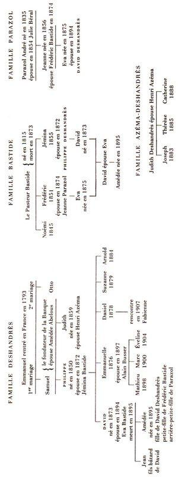

JEANNE GALZY
LA SURPRISE DE VIVRE, IV
LE ROSSIGNOL AVEUGLE
nrf
GALLIMARD
Il a été tiré de l’édition originale de cet ouvrage quinze exemplaires sur vélin d’Arches Arjomari-Prioux numérotés de 1 à 15.
Tous droits de traduction, de reproduction et d’adaptation réservés pour tous les pays.
© Éditions Gallimard, 1976.
À la mémoire de mon Amie
Suzanne Collette-Kahn
— Agrégée de l’Université
Vice-présidente de la Ligue des Droits de l’homme
et Présidente de la Ligue internationale –
qui a fait beaucoup pour
l’« Émancipation de la Femme »
en obtenant, dans l’Enseignement public,
l’égalité des programmes
et des diplômes.
Généalogie des familles
DESHANDRÈS
BASTIDE
et
PARAZOL

PREMIÈRE PARTIE
Fabienne se déshabillait dans la chambre de son cottage. Les bruits des écuries d’en bas venaient à peine jusqu’à elle : hennissements, coups de sabot sur les séparations des boxes.
Elle percevait un léger déclic à chaque bouton-pression de sa robe. Enfin elle arriva à la ceinture basse et se dégagea : la robe ne fut plus qu’un amas d’étoffe brune sur les couleurs vives du tapis. Elle la releva, la jeta sur une chaise.
Daniel lui reprochait toujours son désordre. Mais il n’était pas là, parti en mission, chargé par Parazol d’acheter quelque cheval de course. Elle restait seule, et se sentait libre de ses gestes, sans déplaisir. Elle fit glisser l’épaulette de satin de sa combinaison de dentelle, enleva sa culotte, dégrafa sa gaine, détacha ses bas, et fut nue.
La lampe éclairait mal : elle la prit, la leva haut, et ses cheveux roux étincelèrent. Mais elle examinait son buste, ses seins qui s’alourdissaient, la rotondité de ses hanches : tout ce qui proclamait sa maturité accomplie. Peut-être prête à se défaire, songea-t-elle, comme ces fruits qui font éclater leur enveloppe, comme ces grenades, vues jadis dans un voyage en Espagne, elle ne savait plus avec qui, au temps où elle n’avait que des liaisons éphémères et où elle dansait sur les tables des boîtes de nuit en agitant des castagnettes.
Temps si lointain qu’il ne lui semblait pas l’avoir vraiment vécu. Les images en flottaient sans suite ni netteté, comme sorties d’une caméra affolée. Tout s’agitait, se brouillait en se superposant dans une course insensée.
Elle ouvrit grands les yeux, s’efforça de trouver un point fixe, s’attacha à sa propre image, là, dans l’ovale du miroir au-dessus de sa coiffeuse, se vit encore belle, mais menacée dans cet éclat presque laiteux de sa peau de rousse.
Elle pensa pourtant : « Je suis encore désirable » et, comme si cette pensée lui eût donné une soudaine pudeur, elle se jeta sur son lit, tira sur elle les couvertures.
À l’abri de ses propres regards elle se tâta, sentit la douceur de sa peau, mais aussi sa mollesse. C’en était fait de la dure netteté de ses contours. Elle était comme ces femmes que peint Bonnard, dont la chair semble dépasser les formes par un halo de lumière, et que l’on devine molles au toucher comme la pulpe d’un fruit mûr.
Là-bas, à Fontfrège, Suzanne et sa tante cousaient ensemble dans le château trop vaste, instinctivement réunies.
La guerre semblait déjà très loin bien qu’il n’y eût que quelques années. On était très persuadé que ce serait la dernière. Noémi ne regrettait en rien ce temps où, à cause de leur résidence éloignée de la ville, ni elle ni sa sœur Jémina n’avaient pu participer aux travaux des ambulances et des dispensaires. Et pourtant, la croix rouge sur leur voile blanc, toutes leurs anciennes amies s’étaient dévouées. Mais cette guerre, si peu sensible dans un pays où l’on ne s’était pas battu et qui n’avait guère souffert que de privations de denrées ou de chauffage, semblait avoir agrandi la distance entre les événements qui l’avaient précédée et qui l’avaient suivie.
On disait « avant guerre et après la guerre », car la longue lutte avait marqué une coupure dans le temps et ouvert ensuite une ère nouvelle.
Ainsi, cette batiste que brodait Suzanne était-elle à présent du linge précieux. Et ces draps de fil, posés sur la table auprès de sa tante Noémi, quel prix fabuleux faudrait-il les payer à présent ? Suzanne y pensait, tirant en l’air le fil à broder, puis le repiquant dans la fine batiste avec un geste aussi régulier que le mouvement de la grande horloge.
— Pourquoi Daniel écrit-il si peu ? demanda brusquement Noémi.
— À Montjavon, il y a tant de travail avec les chevaux et cette comptabilité dont l’a chargé le vieux Parazol ! Puis il fait les voyages pour rechercher des étalons.
— Je crois plutôt qu’il s’est détaché de nous.
— Mais non, protesta Suzanne, quand il vient ici nous nous entendons tout de suite.
Elle avait posé sur la table l’étoffe légère. Sa main gardait encore l’aiguille et le dé.
— Alors tu ne sais pas que là-bas ton frère vit avec une femme ?
— Mais si, je le sais. C’est Daniel lui-même qui me l’a dit.
— Et il l’a osé ! Moi, c’est mon frère Frédéric qui m’en a avertie en me recommandant le silence. Ta pauvre mère a été assez éprouvée par la mort de ton père. Il faut lui épargner de savoir son fils acoquiné avec une traînée !
— Mais, Tante Noémi, il a tant souffert de notre ruine ! À Montpellier, il se sentait déchu. Aucune fille de notre monde ne l’eût épousé. Il souffrait d’être un subalterne dans une banque qui nous avait remplacés. Puis, qui l’eût suivi à Montjavon ? Qui eût consenti à vivre dans ce désert sans autre compagnie que les jockeys et des chevaux ! Elle l’a suivi !
— Elle a pensé conclure une bonne affaire.
— En tout cas, elle n’a pas pensé à son agrément !
Noémi eut un éclat :
— Alors, ici, la ville te manque…
— Non. Je n’ai pas dit…
Elle essayait de protester. Il ne fallait pas avouer sa détresse. Mais, à l’heure où tombait la nuit qui allait envahir toute la grande maison silencieuse, elle sentait toujours une angoisse. C’était comme si tout participait déjà à l’immobilité de la mort. Les grands tilleuls qui à présent dépassaient le toit, et, là-bas, la haie de cyprès, plus noire sur le ciel obscur, et ces pièces inhabitées où s’étiraient les lits vides… Oui, cette vie figée des choses, le silence du grand château…
Elle avait envie de fuir.
Pendant les premiers temps, après l’avortement, elle s’était crue sauvée de pouvoir reprendre la vie d’autrefois, de se sentir protégée par les siens qui n’avaient rien su, et pensait pouvoir oublier sa chute. Mais à présent… De vagues sensations lui revenaient malgré elle. Malgré elle s’élevait dans sa chair un appel confus… Puis, surtout, à cette heure où s’agrandissait le silence, elle ne pouvait pas se défendre de penser à ce qu’eussent été, dans cette demeure trop grande pour les survivants, les pas d’un enfant et ses rires.
Parazol se souleva avec peine sur le coude, regarda la chambre comme s’il la découvrait. De l’ombre s’amassait dans les angles et le plafond était faiblement blanc comme des draps encore mouillés. Il chercha du regard, au-dessus de son lit poussé contre le mur, les étriers suspendus, en reconnut l’éclat et les éperons étoilés.
De loin, de très loin, il émergeait. Il essaya de se relever davantage. Une invincible force le fit brusquement retomber.
« Je suis mal », constata-t-il.
Les mots non prononcés lui paraissaient incroyables. Ils contenaient un sens qu’il ne s’était jamais appliqué à lui-même, un rapport ignoré de lui.
Était-ce ce trou noir où il avait sombré, ou bien tous ces phantasmes qui avaient envahi sa nuit, ces visages entrevus sans rien démêler de leur identité, ces galops sauvages, cette rumeur rythmée comme celle d’un océan ?
Et des images ! toujours des images ! Sorties d’il ne savait où, s’effaçant pour renaître… Puis sa faiblesse l’envahit, comme s’il était sur un sol spongieux soudain pénétré d’infiltrations marines. Il sentit qu’il avait tenté un effort surhumain pour échapper à ce gouffre où il enfonçait. Un vent froid glissa sur sa peau et le secoua de frissons. Et, de nouveau, au fond de lui, inexorable, il sentait le mouvement précipité de son cœur. Il appuya sa main sur ce bruit qui montait de sa poitrine. Un oiseau s’y débattait. De toute sa force. Puis un arrêt. Et le battement reprenait…
Là-bas, au-delà des espaces du champ de courses, le domestique se hâtait vers les cottages.
— Madame Fabienne ! cria-t-il.
Un volet s’ouvrit, une femme s’inclina dans l’embrasure.
— Monsieur est très mal ! acheva la voix.
Elle noua sur elle la ceinture de sa robe de nuit, s’enveloppa dans un manteau, fut sur le seuil.
Le valet était là.
— Il a beaucoup de fièvre. Je crois qu’il n’a plus sa connaissance. Il faut faire vite. Venez !
Elle le suivit d’une marche aussi rapide que le permettaient ses babouches.
Ils longèrent le champ de courses. La grande bastide semblait se rapprocher. L’homme allait vite. Elle s’essoufflait un peu.
— Je ne pouvais que vous appeler. Mlle Amédée est partie. Pour je ne sais où. Vous savez peut-être.
Elle fit signe que non.
— Il faudrait prévenir, répéta le valet. Il a beaucoup de fièvre !
Elle ne comprenait pas que cet homme eût tant d’angoisse. Puis elle songea à l’âge de Parazol. Oui, mais la force de Parazol ! Elle l’avait trop vu dompter les chevaux et les entraîner à sauter les obstacles. C’était impossible que cet homme fût en danger.
— Vous allez en juger, dit le valet en s’effaçant.
Il avait ouvert la grande porte. Elle prit l’escalier qu’elle connaissait mal et que le jour naissant éclairait peu.
— J’ai envoyé chercher le docteur.
— À Arles ?
— Oui. Le petit connaît la route.
— Et la famille ? dit-elle encore.
— Quand le docteur aura dit…
Ils avaient gravi l’escalier. Il prit la lampe laissée sur la table, entra pour éclairer le passage. Elle le suivait. D’abord elle ne vit rien que cette longue forme sur le lit, que l’éclat des éperons suspendus au mur. Elle s’approcha sans que rien bougeât dans ce visage aux yeux fermés et, lui sembla-t-il, sans rapport avec le monde. Elle entendit le râle de la respiration, se pencha sur lui, rencontra son souffle, en eut peur, recula un peu. Et ce fut alors qu’il ouvrit les yeux. Il la touchait de son regard. Elle eut l’instinctif mouvement d’échapper à cette fixité insupportable, à ce vide de toute humaine expression. Elle recula, et aussitôt il referma les paupières.
En lui les images incertaines s’effacèrent aussitôt. Il n’y eut plus que ténèbres et silence. Était-ce cela, la mort ? Qu’allait-il advenir de lui ? Quand allait s’arrêter ce cœur dont il entendait la chamade ? Il fit un effort. De nouveau ouvrit les yeux.
Une tête brillante se penchait sur lui. Il la voyait tout à coup émerger de ses ténèbres. Un visage dessinait son ovale clair. Il fit effort pour le reconnaître, puis de nouveau retomba dans son gouffre, entendit de nouveau le martèlement de son cœur, s’abandonna.
Il s’éveilla sous un contact. Une main serrait son poignet. Puis il sentit un poids. On appuyait sur sa poitrine. Il fit un mouvement pour l’ôter. En vain. Le poids pesait de plus en plus et un étau immobilisait sa main.
Une voix parla, dit des mots incompréhensibles.
Des formes confuses s’agitaient. Des pas s’éloignèrent. Il referma les yeux. Tout cela le fatiguait. Il regrettait l’abîme où il avait plongé. Mais, malgré lui, faiblement, un univers émergeait par bribes, comme ces îlots de terre qui sortent parfois des étangs. Une forme s’inclina sur lui, disparut. Alors il ouvrit grands les yeux et vit qu’au pied de son lit une femme était assise. À une interrogation, elle répondit : « On le sauvera. » Il voulut marquer qu’il entendait. Son bras refusa le geste. Ses lèvres restaient collées. Une amertume emplissait sa bouche, et tout se défit de nouveau en lui. Il tombait dans une ombre opaque, lentement, comme si elle avait une telle densité qu’il ne pût jamais en trouver le fond.
— Vous n’auriez pas pu prévenir plus tôt ? Vous avez pris une lourde responsabilité !
Éva était là, dans son émotion arrogante. Elle venait d’arriver, conduite en auto par son père Frédéric. Elle n’avait pas encore quitté sa cape noire, ni le foulard qui enveloppait de deuil ses cheveux gris.
— C’est un valet qui m’a prévenue. Il a fallu du temps avant d’avoir un docteur. Ensuite j’ai fait diligence, dit Fabienne.
Puis elle ajouta, à cause de l’expression inamicale des yeux fixés sur elle :
— Je n’étais pas sûre qu’une dépêche parviendrait vite, à cause du chemin à faire à pied pour vous l’apporter. Il était plus sûr d’envoyer à cheval le petit Martin qui connaît bien votre pays.
Le visage d’Éva se détendit. C’était vrai qu’un facteur à pied eût mis plus de temps, même envoyé par la poste la plus proche. Elle sentit le besoin d’excuser son premier mouvement : comme si cette maîtresse de son beau-frère Daniel Deshandrès eût pu vouloir l’exclure ! C’était inepte : quel intérêt y eût-elle eu ?
— Je ne pensais pas à cela… Dans ma première émotion… Dites-moi : s’en sortira-t-il ?
Elle avait dit les mots plus bas, pour qu’au fond de la chambre le malade ne pût entendre. Fabienne ne répondit que par un signe. Frédéric Bastide parut, ayant fini de ranger sa voiture. Fabienne sentit sa mission terminée.
Elle céda la place à la famille.
Pour rentrer au cottage, Fabienne longea de nouveau le champ de courses. Il était désert. Une fois de plus, elle compta les obstacles. Une fois de plus, elle regarda sa maison, faite comme les autres sur le modèle anglais, une villa modeste, mais enguirlandée de plantes grimpantes. Les rosiers avaient perdu la plupart de leurs feuilles… La pensée lui vint d’Amédée, l’arrière-petite-fille du vieux Parazol. Peut-être sa mère allait pouvoir lui écrire. Mais savait-elle exactement où était cette voyageuse qu’on croyait en Amérique et qui soudain écrivait d’Italie, s’il fallait en croire le vieux Martin qui, pendant la guerre, alors qu’elle était encore si jeune, avait avec elle caché et entraîné, la nuit, les meilleurs chevaux de l’écurie Parazol pour les sauver de la réquisition ?
Le lendemain, la vieille Noune vint. La Peugeot de Frédéric Bastide n’avait que deux places et elle avait dû prendre le petit train irrégulier et si lent. Elle avait eu le temps de se remémorer tout ce qui touchait à ce vieil original de Parazol et de déplorer une fois de plus les manières de son arrière-petite-fille qui était on ne savait où, puisque, avant de partir, Éva avait été forcée de dire qu’elle ne savait où la prévenir.
Tout se relâchait dans ces vieilles familles. Elle fit une fois de plus un rapide examen du destin des Bastide et des Deshandrès, récapitula une fois de plus ses griefs contre Frédéric Bastide qui avait pris comme maîtresse la propre nourrice de sa petite-fille, cette Ginouse qu’il avait installée à Arles dans la maison de sa défunte femme. Et les excentricités de sa propre nourrissonne lui revenaient : cette Éva qui ne se consolait pas de la mort d’une institutrice ! Sans plus s’occuper de sa fille ! Aussi cette Amédée, au lieu de rester près de sa mère, courait le monde, et on ne savait même pas où la trouver !
Le bruit de la respiration de Parazol remplissait la chambre où Éva remplaçait Fabienne. Elle s’approcha du lit. Il dormait. Elle regarda avec inquiétude ce visage aux arcades sourcilières saillantes, au nez en bec d’aigle, aux orbites creuses. Le teint en était devenu cireux ; comme si d’un coup la maladie en avait enlevé le hâle. Et elle s’étonna de constater qu’il avait une sorte de beauté : celle du gisant pris dans le marbre. Elle se souvint en éclair de ce qu’on racontait de lui, de sa jeunesse dissipée, de sa maturité vouée aux femmes, des succès lointains d’une vie parisienne, de sa réputation de séducteur. Oui, cela avait pu exister. Et, à présent, il était là, luttant contre la mort.
Noune avait eu beau confirmer l’espoir de Fabienne, elle regrettait de ne pas lui avoir demandé de veiller avec elle cette nuit. Son père devait dès le matin repartir pour le Mas du Rouvre : qui sait s’il n’eût pas été plus utile que Noune pour aider aux soins ? Mais il y avait le valet, dans le cabinet voisin, qu’elle pouvait appeler. Elle sortit pour s’assurer qu’il était bien là, le vit assoupi. Elle s’en sentit rassurée.
« Encore six ou sept jours avant d’être tout à fait sûr », avait dit, prétendait Noune, la maîtresse de Daniel. Elle s’essayait à partager cet optimisme. Mais jamais elle n’eût imaginé que Parazol pût être terrassé jusqu’à n’être plus que ce corps d’où montait l’inexorable bruit.
Elle prit l’ordonnance, administra le médicament, puis appela le valet pour les enveloppements.
Le valet était fort. Le grand corps osseux de Parazol fut soulevé sans qu’il réagît. C’était un cadavre qui s’abandonnait, jugea-t-elle.
Elle cherchait dans son expérience ce qu’étaient les derniers moments. Elle avait bien peu vu mourir. Sa mère s’était éteinte sans qu’on s’en aperçût. Elle n’avait vu son mari que déjà mort, la tête enveloppée de pansements. Hilda, elle, s’était redressée toute seule pour boire à la tasse qu’elle lui présentait, et soudain était retombée d’un bloc comme prise par le sommeil, sans un sursaut, sans un spasme, les yeux ouverts d’étonnement. Et elle avait senti contre elle le poids du corps abandonné…
Mais pour Parazol, que serait-ce ? À son âge pouvait-on vraiment espérer ?
Elle le regarda encore. Il avait les yeux clos et n’était plus que ce souffle : cette montée pénible et rauque, puis cette faille de silence et, de nouveau, cette remontée obstinée. Mais jusqu’à quand ?
Tout ce qui pouvait arriver se présentait à son esprit. Et Amédée était absente ! Que ferait-elle si elle devait tout régler ? Que deviendrait cette grande bastide ? Et l’écurie ?… Elle s’en voulait de penser, en ce moment peut-être suprême, à toutes ces choses matérielles. Mais pourquoi Amédée n’était-elle pas là et quelle folie de lui avoir donné la liberté de courir le monde ! Vaguement, elle se représentait les pays où elle avait pu diriger sa course ; puis elle se répéta encore « ce vieux fou » en songeant à cet amour aveugle que ce moribond avait voué à son arrière-petite-fille.
Et, en même temps, elle s’étonnait de toutes ces images qui follement envahissaient sa mémoire : son mari mort, la déception et le dégoût de ses premières nuits d’épousée. Son arrivée à Fontfrège, dans le château de ses beaux-parents Deshandrès, sur cette terrasse à balustres tendue au-dessus des jardins. Elle voyait, comme s’ils étaient tous là, ses nouveaux parents inconnus : Jémina Deshandrès et son mari, la troupe de ses beaux-frères et belles-sœurs ; Emmanuelle et ses bandeaux, Suzanne et ses cheveux frisés, Daniel qui la regardait avidement, et ce petit presque adolescent qu’était alors le futur peintre Arnold. Tante Noémi était un peu en retrait, comme l’oncle Otto. Et tous la regardaient, elle qui revenait de son voyage de noces, déçue et écœurée : l’amour, était-ce cela ?
Elle se reprit : une porte s’était entrouverte. Une chevelure brilla. Un visage se tourna vers le lit. Puis une voix étouffée dit : « Vous avez besoin de moi ? » D’abord, elle ne répondit pas. De quoi se mêlait cette étrangère ? D’être la maîtresse de Daniel lui conférait-il des droits ?
Mais Fabienne s’avançait encore et prenait la main du malade.
— Il a moins de fièvre, dit-elle.
Puis appuya sur la poitrine sa main ouverte.
— Le cœur tient, comme a dit le docteur.
Éva ne répondait toujours pas. Elle songeait à tout ce qu’elle savait sur cette femme ; une entretenue qui voulait sans doute se faire épouser. Elle cherchait quels mots pouvaient la chasser de cette chambre. Mais déjà Fabienne s’écartait. La porte fut fermée doucement. Ses pas s’éloignèrent.
À Fontfrège, Jémina Deshandrès ouvrit la lettre avec son vieux coupe-papier d’argent.
— Tiens, dit sa sœur, qu’est-ce qui t’écrit ?
Depuis la faillite de la Banque, les lettres étaient rares et ne venaient que des enfants installés à Paris, et Noémi n’avait reconnu aucune écriture, ni d’Arnold, ni d’Emmanuelle ou de ses enfants.
— C’est de ma belle-fille, dit Jémina.
— Éva t’écrit ? s’étonna Noémi.
Jémina prit ses lunettes, s’approcha de la fenêtre pour être mieux éclairée.
— Le vieux Parazol a failli mourir ! s’écria-t-elle.
— Comment ? dit encore Noémi.
— Une pneumonie. Mais on a de l’espoir.
— À son âge ? Mais il est plus vieux qu’aucun de nos morts !
— Quand j’ai accompagné mon pauvre David pour lui demander la main d’Éva, il m’avait paru si étonnant !
— Le cheval conserve, dit Noémi qui avait toujours blâmé cette passion chez un vieillard.
En bas, dans le silence du jardin, un pas fit crisser le gravier de la terrasse.
— C’est ta fille, dit Noémi en se penchant. Elle va être aussi étonnée que nous.
Suzanne entrait déjà et, devant les femmes déclinantes, il y eut sa jeunesse de cheveux blonds, de peau éclatante, de seins gonflés sous la robe unie.
— La Maïre m’a dit que vous aviez reçu une lettre de Montjavon. Elle a reconnu le timbre d’Arles.
— Figure-toi que le vieux Parazol a eu une pneumonie et qu’il s’en tire !
— Dieu ne le permet pas toujours, dit Jémina en soupirant.
« Elle songe à Papa », pensa Suzanne, et elle demanda :
— Qui te l’écrit ?
— Éva. On l’a appelée quand on a craint le pire.
— Je me demande quel âge il peut bien avoir. Il doit être aussi vieux que Mathusalem.
— Et dire que tant meurent si jeunes, soupira Jémina, qui pensait maintenant à son fils David.
Elle avait posé ses mains, un peu déformées, mais encore soignées, sur ces draps qui revenaient de la lessive. Noémi se leva, en prit un, le déploya, en vit l’usure, et conclut :
— Encore un qu’il faudra cambirer.
Elle employait le mot patois qui voulait dire que, coupant la bande d’usure de son milieu, on en referait un en surjetant les deux lisières. Plus étroit, mais solide.
— Je pourrai faire le surjet, offrit Jémina.
— Je coudrai les ourlets, dit Suzanne.
— Et je le prendrai pour mon lit qui n’est que d’une place, conclut Noémi.
Mais sa voix était plus allègre que de coutume. Sans doute était-elle satisfaite de l’offre de sa sœur qui d’ordinaire participait si peu à la vie de la maison.
— Pourquoi ne reverrais-tu pas cette femme ? Elle s’est occupée de ton grand-père. Et tu lui as fait une tête quand elle est revenue !
— On sait ce qu’est cette Fabienne !
— Et toi, tu pourrais avoir plus d’indulgence !
Il y avait quelque chose de presque accusateur dans le regard de la vieille Noune. Éva sentit qu’elle pensait sans doute à Miss Steenes. Avait-elle deviné quel lien l’avait liée à Hilda ? Elle évita de la regarder pour répondre :
— J’ai de l’indulgence pour ce qui en mérite. C’est une entretenue que Daniel a sauvée du ruisseau !
— Comme si les pauvres pouvaient toujours penser aux convenances. C’est pour les riches ! Et encore !
Éva regarda alors Noune. Était-ce par pauvreté qu’elle avait cédé jadis à son père Frédéric Bastide ?
Elle faillit parler, par prudence se tut. Elle craignait vraiment que Noune en sût trop sur elle.
Elle se leva, regarda le malade. Il était plongé dans le sommeil.
— Après tout, tu as peut-être raison ; cette femme nous a rendu service.
Noune avait compris et s’assit près du lit.
Éva s’éloigna, descendit l’étage, longea le champ de courses désert, remonta vers les écuries, demanda à un palefrenier où habitait Mme Fabienne.
Il lui indiqua sur la colline le cottage :
— C’est celui de M. Daniel.
— C’est moi, dit Éva dès que la porte fut ouverte. Je tenais à vous remercier.
— J’espérais votre visite, dit Fabienne.
Elle parlait sans embarras. Elle était encore belle bien qu’elle ne fût plus jeune. Et Éva regardait cette peau éclatante, ces cheveux que, malgré la mode, elle n’avait pas coupés, et, entre les lèvres un peu épaisses, l’émail des dents.
— Le trouvez-vous mieux ? demanda-t-elle.
— Oui, le docteur est très rassurant.
— C’est vrai qu’il est très fort encore. Je le vois quand il exerce les chevaux. Il sait dompter les plus sauvages. C’est inouï, mais on l’appelle toujours pour les plus récalcitrants.
Fabienne se tut soudain. Elle voyait Éva absorbée par cette esquisse qu’Arnold lui avait donnée autrefois.
— Vous regardez le dessin de votre beau-frère ? Oui, c’est toute votre famille. Le tableau lui a valu son Prix de Rome. Vous vous souvenez ?
Éva eut un signe de tête, elle acquiesçait. Mais ce qui la captivait, c’était bien moins l’esquisse que ses propres souvenirs. Elle était là, c’était elle, cette toute jeune femme au bras d’un jeune mari, mince et blond, vêtu de modes désuètes. Oui, c’était bien elle, rentrant de son voyage de noces. Mais comme lui semblait lointaine cette très jeune femme vêtue d’une robe compliquée de dentelles et de volants !
— Vous vous reconnaissez ? demanda Fabienne.
— Oui, mais tout cela est si lointain…
Encore quelques instants elles conversèrent ; mais bientôt Éva ne trouva plus rien à dire à cette étrangère. Elle s’excusa sur la nécessité de sa présence auprès du malade, repartit. Mais le passé la poursuivait. Elle était de nouveau cette jeune femme que David accablait de ses étranges exigences. Elle entrait de nouveau chez les Deshandrès, le voyage de noces achevé. Elle retrouvait sa belle-mère Jémina, sa tante Noémi et tout le groupe des enfants Deshandrès. Il y avait ces bandeaux blonds autour du visage calme d’Emmanuelle, la tignasse ébouriffée de Suzanne, Daniel, le cadet de David, et cet enfant, à peine au seuil de l’adolescence, qui déjà dessinait avec une habileté surprenante. Que tout cela était loin ! Cela avait-il même existé ?
Elle marchait, soustraite à tout, sans ajouter même attention à la piste du champ de courses où pourtant on exerçait un cheval, monta en somnambule les marches, vit Parazol endormi, Noune un peu à l’écart.
Sur une table brillait la lourde montre d’or qui marquait les secondes. Elle sortit de sa torpeur, prit le thermomètre, avança vers le lit, et, pour prendre sa température, chercha l’aisselle du malade.
Dès que Noémi fut rentrée du temple la Maïre l’aborda :
— Quelqu’un est venu voir Madame. C’était un prêtre.
Noémi ne put retenir un geste d’étonnement. La Maïre reprit :
— Oui, un curé. J’ai ouvert parce qu’il a dit qu’il venait de la part du neveu de Madame. C’est l’abbé Azéma qui l’envoyait.
Noémi ne revenait pas de sa stupeur. Elle dit avec effarement et scandale :
— Et vous l’avez introduit !
— Il fallait bien puisqu’il venait de la part du neveu de Madame !
Noémi Bastide ne répondit pas. Jamais elle n’eût cru possible cette intrusion. Mais les curés savent profiter de tout. Celui-là venait sachant que, depuis la mort de son mari, Mme Philippe Deshandrès ne vivait plus que de souvenirs. On se convertit plus facilement après de tels deuils. Il avait escompté la faiblesse où peut plonger une grande douleur. Ce curé faisait son office.
— Quel est ce prêtre que tu as vu ? demanda-t-elle dès qu’elle fut rentrée dans la chambre de sa sœur. Que t’a-t-il dit ? Pourquoi l’as-tu reçu ?
De sa chaise poussée devant le secrétaire, Jémina ne fit aucun mouvement, pas même celui de tourner la tête vers sa sœur. Elle était tout occupée à introduire une clé dans la serrure d’un tiroir, y jeta une enveloppe, referma, ensuite fit face.
— Il voulait me parler.
Puis elle s’arrêta ; visiblement elle cherchait à organiser sa réponse.
Alors Noémi éclata :
— Sans doute voulait-il abuser de ton deuil si proche ! Tu as été d’une imprudence rare. Quelle preuve avais-tu qu’il te fût envoyé ? Les voleurs se déguisent, l’habit ecclésiastique enlève tout soupçon !
— Ce n’était pas un malfaiteur.
Jémina baissa la tête, replaça une épingle dans le chignon épais qui tenait ses bandeaux.
— Il ne mendiait rien. Ni pour lui ni pour ses œuvres. Pas même pour le séminaire où il a fait ses études et connu Joseph Azéma. Il venait seulement me dire…
Elle s’arrêta, hésita. Puis se décida d’un coup :
— Il est le fils qu’avant son mariage avec Éva avait eu David !
Noémi sursauta :
— Que dis-tu ! Ton fils ? Le mari d’Éva ? Le père d’Amédée ?
— Avant son mariage, répéta Jémina.
Il y eut un silence.
Noémi mesurait peut-être le degré de culpabilité de David.
Jémina regardait cette face étroite, anguleuse, où l’âge marquait ses rides. Elle se demanda soudain : « Que sait-elle de la vie ? Elle n’a rien vécu : comment jugerait-elle ? Que sait-elle des tentations ? »
Déjà, inconsciemment, elle défendait son fils mort.
— Un homme est un homme. Il subit des attraits. Peut-être irrésistibles. David était si jeune !
Elle s’attendait à une dénégation indignée. Mais Noémi regardait par la fenêtre la fuite des nuages. Son visage flétri était sans expression, comme absorbé par la contemplation du ciel houleux. Était-ce sa désolation qui la murait en elle-même ?
Jémina eut hâte de savoir.
— À quoi penses-tu, Noémi ?
— Je cherche.
Elle cherchait visiblement, les plis de son front crispés par l’effort. Longtemps, elle resta sans rien dire, puis articula d’un ton solennel : « Ne jugez pas si vous ne voulez pas être jugé. » C’est dans l’Évangile.
Alors Jémina reprit courage, car elle voulait revoir ce prêtre qui ressemblait à son mari : un Philippe Deshandrès brillant de jeunesse, celui qu’elle avait épousé, dont elle avait senti et le poids et l’ardeur… Était-il possible qu’après tant de deuil on gardât de tels souvenirs ? Elle vit dans la glace en face d’elle son visage marqué, ses cheveux blanchissants, son menton alourdi… Oui, ce n’était pas convenable qu’en elle tous ces souvenirs aient gardé leur enivrement. N’était-il pas contraire à tout ce qu’elle savait du monde qu’une joie passée laissât tant de traces ?
Mais déjà Noémi poursuivait :
— Que t’a-t-il demandé au juste ? Car je suis sûre que tu n’as rien nié !
— Le pouvais-je ? Sa mère lui avait dit son origine.
— Alors…
Noémi fixait sur elle son regard accusateur. Ce curé ne pouvait avoir été guidé que par son intérêt : il venait sans doute réclamer sa part d’héritage. Il avait dû savoir que jadis les Deshandrès étaient une des familles les plus riches de la ville. Sans doute l’Église avait fait ce calcul, pensant que, dans le désarroi d’un chagrin, on peut se convertir ou tout au moins ouvrir sa bourse.
Elle se leva, marcha avec une agitation évidente.
— Qu’as-tu ? s’informa Jémina.
— Plus je réfléchis, plus je trouve étrange sa démarche.
— Il est pourtant naturel qu’il ait voulu connaître ceux dont il est issu. Je suis la seule survivante.
— Et que t’a-t-il dit ?
— Il m’a parlé de sa vocation. Il a toujours été un enfant pieux. Sa mère l’était. Il a été élevé chez les Frères. C’était d’ailleurs la seule issue pour sa mère qui n’avait pas d’argent. Il m’a dit que jusqu’à son dernier jour, elle a travaillé. Elle était repasseuse.
— Elle était dans une ville ?
— Oui. À Lyon. Elle avait pensé que dans une grande ville elle trouverait plus facilement du travail.
— Et c’est elle qui lui a révélé la vérité ?
— Je te l’ai dit. Mais jamais elle ne l’a engagé à retrouver sa famille.
— Et tu le crois !
— L’idée ne lui en est venue que lorsqu’il s’est trouvé seul. Et justement Joseph Azéma était son directeur de conscience.
— C’est un roman.
Noémi raillait, elle si peu encline à l’ironie. Et tu as cru cette histoire !
Agressivement elle s’appliquait à détruire l’impression qu’avait pu faire sur sa sœur ce porte-soutane.
— Et tu crois qu’Azéma te l’aurait envoyé, ce garçon né du péché de ton fils mort ! Et si sa mère était une coureuse, comment être sûr qu’il est vraiment né de lui.
— Si tu l’avais vu comme moi, tu ne douterais pas un instant. Quant il est entré, j’ai cru voir mon mari ressuscité avec sa jeunesse !
— Tu l’as imaginé.
— Non. C’est frappant !
Jémina se leva, alla vers le secrétaire, fit jouer la planchette qui retenait fermé le tiroir à secret, en retira un vieil album. La couverture de maroquin vert en était fanée, son fermoir doré, terni par l’usage. Il devait avoir été manié par des générations et, en effet, il contenait, après des daguerréotypes, ces vieilles photographies aux poses figées que le temps avait pâlies. Elle fit sortir d’entre les feuillets épais deux cartes liées ensemble et les délia.
— Regarde : les voici au même âge, Philippe enfant et lui !
Noémie tendit la main, prit les deux photographies, s’avança près de la fenêtre pour mieux les examiner. Jémina la vit se pencher sur les images jumelles, puis lever la tête.
— Oui, on dirait…
Elle ne voulait pas affirmer, mais n’osait pas une dénégation, par respect de la vérité.
Éva regagna le Rouvre dès que le consultant venu d’Avignon assura que la constitution exceptionnellement vigoureuse de Parazol permettait d’assurer la guérison. Il était plus réservé sur la possibilité de reprendre les activités coutumières. Il exigeait des précautions, prescrivit un régime, parla de surveiller cette convalescence. Éva l’en pria, pressée de repartir.
Le séjour dans cette grande demeure si sommairement meublée en partie, et en partie contenant les meubles somptueux des Deshandrès, mais laissée à l’abandon, lui faisait sentir, plus qu’au Rouvre, le vide dont elle ne parvenait pas à prendre l’habitude. À Montjavon, il n’y avait rien d’Hilda. Jamais elle n’y était venue. Parazol n’avait été pour elle qu’un vieil homme maigre et solide qui arrivait à cheval au Rouvre pour en repartir presque aussitôt, non sans avoir hissé la petite Amédée à l’avant de sa selle et lui avoir fait faire un temps de galop : « pour lui donner l’amour du cheval », prétendait-il.
Parazol avait posé une fois pour toutes sur Hilda son regard scrutateur puis l’avait traitée en hôte négligeable.
« Comment a-t-il fait pour plaire à tant de femmes ? » se demandait encore Éva instruite par les légendes qui couraient sur sa vie parisienne, et aussi cette collection de photographies, somptueuses et démodées, qu’elle avait trouvées là, durant sa maladie, en ouvrant un tiroir, abandonnées parmi les cravates et les boutons de manchettes.
Plusieurs fois, tandis qu’elle le veillait, elle avait interrogé son visage endormi. Que savait-elle de lui ? Pas plus sans doute qu’il ne savait d’elle, même s’il avait soupçonné, même si son père avait parlé. Et sûrement il n’avait pas parlé de ce que lui-même voulait ignorer : cette étrange passion qui avait dévoré sa fille, que la mort n’avait pas tarie, puisqu’il la voyait si souvent prendre le chemin du cimetière.
Elle allait bientôt rejoindre tout cela. Bientôt elle pourrait, dans les lieux où elles avaient vécu, retrouver sa morte.
Avec, parfois, une illusion de présence, si inattendue et si réelle, qu’elle avait envie de crier un nom et d’ouvrir les bras.
Fabienne regardait Daniel endormi. Il respirait bruyamment, la bouche ouverte. Sur son front, ses cheveux frisés retombaient dans le désordre du sommeil.
Tout à l’heure, elle avait connu son poids, senti sa pénétration. Comme depuis des nuits et des nuits, et elle avait une sorte de bonté de s’être ainsi soumise à son désir.
Au fond des temps, il y avait eu pourtant un jeune homme beau et timide qui lui avait paru désirable. Il y avait eu des nuits où, initiatrice, elle lui voyait accomplir de mieux en mieux les gestes qu’elle lui avait inspirés. Un temps où sa chair l’appelait, même entre les bras de Morel, son entreteneur.
De lui elle avait été fière. Il lui plaisait même qu’il fût d’une classe sociale qui ne l’eût jamais acceptée.
Et elle pensait à ce passé d’une manière à la fois précise et vide, car à présent rien en elle ne s’émouvait plus.
Il était là. Il respirait fort. Elle se demandait pourquoi elle le subissait encore. Rien en elle ne le souhaitait. Elle eût préféré son absence.
Oui, dormir seule. Dormir seule en ces nuits où parfois, dans le demi-sommeil, il lui semblait sentir enfin un autre corps, d’autres gestes, d’autres caresses… Quelque chose d’inconnu…
Mais comment y aurait-il quelque chose d’inconnu ?
Ces dons faits cent fois, mille fois, dix mille fois ! Plus encore ! et dont rien ne restait en elle. Rien, pas même un souvenir.
Il dormait. Elle récapitulait sa vie. Tableaux flous et muets. Tout s’effaçait. Tout tombait avec le temps comme des vêtements usagés. Et on avançait, dépouillés. Oui, même de ce corps trop connu, de cette chair qu’elle ne touchait pas, de ce garçon un peu farouche, ce garçon disparu, mort en elle. Inexistant.
Un autre, celui qui dormait, là, la bouche ouverte, avec ce souffle exaspérant !
Se pouvait-il qu’elle eût consenti une fois encore après mille fois, mille fois mille fois !
On lui avait rapporté qu’il allait à Arles pour les affaires de l’élevage, mais aussi pour les belles filles du pays. Pourquoi n’y allait-il pas ? Pourquoi n’y était-il pas allé et ne l’avait-il pas débarrassée de lui, cette nuit où elle eût voulu rester seule en face d’elle-même, neuve dans un univers neuf, avec un corps ignorant, libre !
Et la figure immobile et grave, striée de rides comme un sable offert au grand vent, remontait dans sa pensée, sortie de l’abîme où elle l’avait vue s’enfoncer.
Parazol vivrait. Elle en était sûre.
« Où est Amédée ? » se demandait Éva.
Il n’y avait pour lui répondre que des cartes postales qui marquaient son passage de ville en ville, de contrée en contrée, et où elle inscrivait quelques mots d’affection, à l’envers d’un théâtre, d’un monument ou de groupes d’immeubles à étages vertigineux, de ports encombrés de navires, car le monde entier semblait défiler et Amédée, se déplacer sans cesse. Qui suivait-elle, ou qui fuyait-elle ?
— De Valparaiso cette fois, dit Éva en reposant la carte sur la table.
— Quand cela s’arrêtera-t-il ? dit Frédéric Bastide.
— Que pouvons-nous ?
— Rien ! mais si le vieux Parazol était mort !
Il traitait de vieux son beau-père, surtout depuis que lui-même avait vieilli, comme si cet aîné, par sa grande vieillesse, le rassurait sur lui-même et, par comparaison, l’allégeait de son âge.
— Elle a bien dû toujours penser que cela était possible et cela ne l’a jamais arrêtée.
— Et toi, n’y pouvais-tu rien ? Tu es sa mère après tout !
— Comment la retenir ? Un être doit pouvoir choisir sa vie.
Frédéric Bastide ne répondit pas. Sans doute Éva avait raison ; mais n’empêche qu’il n’avait pas eu de chance avec sa descendance. Éva qui était là était sans doute tout aussi loin de lui que sa petite-fille qui courait le monde.
Parazol devait se sentir aussi démuni de famille que lui-même et tout aussi déçu dans sa prédilection pour son arrière-petite-fille.
Cette constatation lui fit sentir une soudaine sympathie pour ce vieux rescapé qu’était son beau-père. Il regarda encore sa fille : elle semblait ne rien voir, ni lui, ni la carte posée sur la table.
Il leva les épaules et s’éloigna vers les communs. Un homme nettoyait l’écurie, sortait avec la fourche le fumier. Des bruits d’eau jetée à seaux, des tapements de sabots et, dans le potager, chantait la petite Mireille qui secondait à présent la vieille Noune, une fille d’Arles qui avait quelques manières des villes, surtout celle de regarder à travers les longs cils de ses paupières baissées. Elle était devant la barrière et lui jeta un long regard. Il en eut une surprise qui lui donna une soudaine montée de sang, puis se contint, passa devant elle, et alla dans la cuisine décrocher son fusil.
— Monsieur va à la chasse ? dit la petite avec sa voix chantante.
Il ne répondit pas, mais il songeait à cette autre chasse avec ses aguets prolongés, ses pièges préparés, ses patientes victoires. Mais qu’était-il pour cette enfant si jeune, lui, déjà presque un vieillard ?
— Que va faire Monsieur ? dit l’ouvrier italien récemment embauché.
— Préparer l’affût. En ce moment, les foulques abondent et j’ai là-bas un prisonnier qui, à l’aube, les fera accourir.
Le garçon, trop nouveau, n’eut pas l’air de comprendre. Mais, en s’éloignant, pour la première fois, Frédéric Bastide pensa à cette monstrueuse utilisation de la compassion des bêtes qu’attirent les cris d’un congénère qu’elles croient en danger.
« Je m’amollis et me ramollis », jugea-t-il.
Il siffla son chien, fit à pied la distance qui le séparait du Vaccarès à travers les pâtis crevés parfois d’eau saumâtre. Oui, ni fille ni petite-fille n’étaient près de lui. Mais il ne se sentait pas seul : ce sol était son pays élu. Il en aimait jusqu’aux brusques enfoncées sous ses pas. Un sol à surprises, à pièges cachés. Et il regarda, au-dessus des terres, le grand ciel libre.
Le couchant commençait à rougir. Bientôt il y aurait le vaste incendie qui rougirait les eaux dormantes, tandis que noircirait cette végétation d’herbes dures, de salicornes et de roseaux. Le monde entier ne serait plus que cette féerie dramatique, cet embrasement du ciel que la terre réverbérait. Puis, tout s’éteindrait lentement, passant à l’or avant de brunir et de se confondre avec la cendre de la nuit.
« Il reviendra ! » pensait Jémina. De nouveau elle pourrait dévorer des yeux ce garçon qui, malgré sa soutane, ressemblait tant à l’homme jeune qu’elle avait tout de suite aimé. Il lui ferait de nouveau retrouver Philippe à travers le temps.
Elle n’en parlait plus à Noémi qui l’avait plusieurs jours incessamment interrogée, puis avait abouti à des conclusions précises :
— Il veut te convertir : c’est pour cela qu’il est venu !
Non, il n’avait rien dit de tel. Il avait seulement parlé d’années de misère, de l’école sordide où il avait été élevé par charité chez les Frères que l’on baptisait « ignorantins » par dérision, de sa rentrée dans le logis où sa mère, un fer à la main, s’affairait autour de la longue table à repasser. Puis des repas cuits à la hâte sur le brasero où reposaient d’ordinaire les fers à repasser. Il avait dit ses souvenirs lointains d’un port où tanguaient des barques et d’un homme très grand et blond qui s’inclinait sur lui et le tenait par la main. Car cela avait eu lieu. Elle l’avait toujours pressenti : Philippe s’était penché sur un enfant qu’elle ne lui avait pas donné !
Un enfant qui n’était pas le sien, mais celui d’une autre ! Elle en avait assez souffert !
Même lorsqu’elle avait su que cet enfant était celui de son fils mort.
Comment parler de tout cela à Noémi ? Comprendrait-elle cette jalousie insensée ? Car elle avait toujours souffert de savoir qu’un enfant qui ressemblait à Philippe existait et qu’elle n’avait pas su lui donner ce fils qui fût un autre lui-même.
Parfois c’était cet enfant qu’elle retrouvait en évoquant le prêtre, mais d’autres fois c’était Philippe ressuscité sous une soutane. Et cette soutane lui était odieuse comme un travesti de la vérité.
Elle avait gardé d’Arnold presque enfant cette ébauche du tableau que plus tard il devait peindre : elle la cherchait en vain. Elle remuait les piles de draps et de linge où elle avait eu coutume de cacher ce qui lui était précieux. Mais sans doute tout avait été remis en ordre depuis que Noémi et Suzanne avaient pris la direction de la maison. Et là, elle eût trouvé Philippe presque à l’âge où était ce prêtre qui si exactement lui ressemblait.
— Parazol reprend sa vie, constatait Daniel. Ce matin il est allé voir Coriolan dans sa stalle. Il est décharné, mais il tient. Il a caressé le museau de la bête. Peut-être se demande-t-il s’il pourra bientôt le monter.
— Tu l’as donc vu ?
Non seulement il l’avait vu, mais il l’avait accompagné. Parazol était entré dans la tour du château qui servait de bureau à Daniel chargé de la comptabilité. Il n’avait pas perdu un pouce de sa taille. Mais l’écurie était trop loin pour qu’il y allât seul : il venait lui demander son aide.
— Je lui ai offert mon bras. Il l’a pris juste pour descendre l’escalier. Là, il avait besoin d’affirmer son équilibre. Aux écuries, les lads l’ont regardé aussi effarés que s’il eût été un revenant. Il l’a senti et m’a interrogé pour savoir s’il avait été vraiment aussi malade. Et tout de suite il s’est tenu plus droit, comme s’il défiait la mort. C’est vraiment un type !
Fabienne écoutait. Oui, celui-là était vraiment une force.
— Le cheval l’a reconnu. Il en était tout fier, aussi ému qu’il peut l’être. Mais savoir à quoi il pensait…
Il décrochait dans l’armoire son manteau. C’était samedi : il allait passer le dimanche dans sa famille.
Sans regret elle le regardait partir. Quand il était à Montjavon, ce départ pour Fontfrège était devenu un rite.
Elle rentra dans la maison, refit les gestes quotidiens, comme tout était monotone ! Aussi bien la présence de Daniel que sa solitude. Était-ce cela qu’elle avait cru trouver, cette morne continuité de l’existence ? Était-ce à cela qu’avaient abouti tant d’efforts vers le bonheur, et même toutes les misérables concessions de sa jeunesse ? Tous les biens qu’elle avait convoités n’étaient-ils que néant et goût de cendre ?
Et le cercle était refermé. Elle-même l’avait voulu : n’avait-elle pas poussé Daniel à accepter la situation que lui offrait Parazol ?
À présent, elle savait ce qu’était cette vie si convoitée, elle tournait en rond comme un cheval dans le manège.
Il y avait des soirs, quand ailleurs s’allumaient les lumières des villes, où elle enviait cette heure qui était autrefois celle des rencontres nocturnes à une table de café, devant la consommation offerte parfois par l’administration qui savait reconnaître les services de ces femmes qui attiraient les consommateurs. Elle aimait cette attente devant une table, parfois vaine, mais souvent exaucée. Des amis revenaient après une absence. Elle se souvenait des uniformes des officiers de jadis qui serraient la taille, cambraient les reins, exprimaient la force virile. Et même les conversations lui manquaient : cette chronique de la ville, tant d’histoires murmurées… Oui, même les ragots les plus futiles…
À présent, il lui arrivait de guetter, à la nuit tombante, au-delà du champ de courses, une fenêtre qui soudain brillait dans la tour d’angle. Cette clarté devait éclairer la chambre circulaire, le lit adossé au mur, les étriers suspendus, les fauteuils raides, la table ronde sur laquelle il jetait sa cravache, et surtout le visage aux yeux sombres sur sa pâleur et les mains où saillaient les tendons et les veines.
Elle songeait aussi à la légende de cet homme jadis renommé pour son faste et tant de maîtresses fameuses que lui attribuait la chronique galante comme cette Liane de Prosny qui, à Deauville, sautait à la corde avec une amie, ayant attaché ensemble leurs deux sautoirs de perles. Comment était-il en ce temps-là ?
Elle imaginait faiblement les cheveux plaqués, les yeux perçants, la haute stature dans les vêtements d’un autre âge. Et l’image inconsistante la hantait, puis soudain devenait celle, plus proche, du vieillard au profil aquilin, à la taille haute où rien ne fléchissait.
Daniel disait vulgairement : « À cet âge on ne recule que pour mieux sauter ! »
Elle n’aimait pas ce dicton populaire et n’imaginait pas qu’il puisse jamais perdre un centimètre de sa taille, ni rien de cette force adroite qui, même au repos, animait ses longues mains.
Et soudain il lui vint à l’esprit que ces mains pouvaient dompter et caresser… Quelle idée bizarre ! À son âge que pouvait-il, sinon être ce qu’il était : propriétaire de chevaux de course et d’une écurie renommée ?
Elle fit quelques pas, alla vers la grande glace à trois faces, ce miroir Braud qu’elle consultait souvent et qu’elle avait acquis jadis comme le meuble le plus indispensable. C’était vrai que l’âge déjà la marquait.
Malgré les soins vigilants, sa peau commençait à se détendre et ses muscles à fléchir. Ses seins n’étaient plus insolents mais sans doute plus doux au toucher. Elle en fit l’expérience en se frottant légèrement du bout des doigts. Mais son ventre accusait de plus en plus son pli sur ses cuisses éclatantes et rondes.
Depuis la mort de son mari, Jémina Deshandrès avait considéré que sa vie était finie. Elle n’avait plus de raison d’être et avait même abandonné toute direction du domaine et de la grande maison de Fontfrège.
Mais la visite de ce prêtre qui se disait fils de David l’avait redressée. Philippe s’était occupé de cet enfant et n’en avait jamais abandonné le souci. Ne devait-elle pas faire pour lui ce qu’il eût fait lui-même s’il avait vécu ?
Elle s’accusait presque d’avoir été trop réservée lors de leur entrevue, de lui avoir paru peut-être méfiante, troublée comme elle l’avait été par sa ressemblance avec Philippe. Au point de croire que c’était lui qui revenait du fond du passé.
Tout cela l’agitait et s’y ajoutait une constatation désolée : pourquoi fallait-il que cet homme ait été élevé dans l’erreur et qu’il appartînt à une Église ennemie de la vraie foi ! Rome n’avait-elle pas remplacé Babylone ?
Depuis l’enfance elle le savait, dans ce pays où avaient sévi toutes les persécutions religieuses et où tant de familles se souvenaient de leurs aïeules emprisonnées à Aigues-Mortes, et de tant de leurs ascendants condamnés aux galères. Comment l’oublier ? Si Philippe était là, ne s’en souviendrait-il pas ?
En la quittant, il avait dit qu’il reviendrait, mais alors elle n’avait pas mesuré, dans l’émotion de sa découverte, à quel point cet homme était leur ennemi ! Et maintenant elle désirait et à la fois craignait cette venue. Lorsque, si rarement à présent, on sonnait à la grille, elle sentait un tel émoi qu’un peu de sang montait à ses joues. Par bonheur ni Suzanne ni même Noémi ne le remarquaient, plus occupées à regarder par la fenêtre si quelqu’une de leurs relations d’autrefois faisait encore l’effort de venir jusqu’à elles. Car il n’était pas facile, si l’on ne disposait pas d’une voiture, de venir aussi loin et peu à peu s’était réduit le cercle, si vaste jadis, des amis qui hantaient leur maison.
« Où dois-je lui écrire ? » se demandait Éva. Elle tournait et retournait les dernières cartes reçues, examinait les timbres et les cachets de la poste.
« Italia », disaient les unes ; « Österreich », portait un autre. Mais beaucoup étaient illisibles, écrits en caractères inconnus.
Que faisait-elle dans ces pays ? Elle n’en avait pas parlé à Parazol qui avait besoin de calme et n’avait sans doute pas d’indications plus précises. À moins que le besoin de lui fournir de quoi payer tous ces déplacements… Mais qu’allait-elle penser ? Il avait sans doute tout prévu.
Elle revenait aux explications possibles : sûrement à son âge Amédée avait quelqu’un dans sa vie. Mais qui ? Elle se remémorait tout ce que sa fille avait hérité d’elle : oui, elle avait sa poitrine plate, ses hanches étroites et ses mains robustes, plus faites pour tirer sur des rênes que pour des ouvrages de femme. Là s’arrêtait la ressemblance : elle avait les cheveux roussâtres et les yeux clairs des Deshandrès. Mais la silhouette était d’elle, et cette force. Elle songea aussitôt : « Et sans doute le même penchant. »
Elle regarda ses mains viriles posées sur ses genoux, sans autre bague que la lourde chevalière gravée aux initiales d’Hilda Steenes. Depuis combien d’années la portait-elle ?
Elle compta. Oui, tout ce temps où elle avait pu vivre sans elle ! Mais ce temps, impuissant à tout effacer, estompait tout : la voix, les gestes, et qui sait si les souvenirs rendent toujours exactement la vérité ? Elle eut peur, voulut évoquer le visage aboli, dissous dans la terre, eut crainte de ne pas le trouver, se détourna de son effort. Noune rentrait.
— Tiens, voilà encore une carte, annonça-t-elle.
Sur la carte, il y avait, comme toujours, à peu près les mêmes mots.
— Elle ne s’épuise pas à raconter ce qu’elle fait, ajouta Noune, et si le vieux était mort sans la revoir, il l’aurait bien mérité. Parce qu’enfin, sans lui…
Oui, c’était l’argent de Parazol qui lui permettait de courir le monde. C’était lui qui avait voulu qu’elle eût sa pleine liberté. Il avait jadis gardé chez lui la petite Daisy dont Amédée avait été folle, permis les sorties en Camargue, ses séjours à Paris, volontairement esclave de toutes ses lubies ou ses fougues. Éva rentra en elle-même : oui, le mariage était la seule issue pour une jeune fille. Était-ce en songeant à l’échec du sien que Parazol avait tout permis ?
Lorsque son père rentra, Éva lui montra le message. Il lut, déchiffrant mal en dépit des lunettes.
— Eh bien, constata-t-il, elle ne varie guère ses formules. Mais rien ne m’empêchera de penser qu’il y a anguille sous roche. N’as-tu pas remarqué que ces derniers temps elle a écrit quelquefois « nous » ?
Éva se fit rendre la carte. Comment n’avait-elle pas vu qu’Amédée avait écrit : « Nous allons partir » ?
Le soir, elle reprit ce petit paquet de messages. Oui, une fois, la formule avait été employée. La carte datait de Venise. Et elle ne retrouva le « nous » qu’une seule fois. Qu’est-ce que cela voulait dire ? Mais que peut-on jamais empêcher ?
Elle laissa errer ses regards sur le ciel immense, le ciel des pays plats, sans verdures hautes. Des oiseaux en bandes le traversaient. Ils venaient d’où, allaient où ? Leur vie, c’était cette liberté de changement.
Amédée avait sans doute le même besoin. Elle le dit avant de se coucher à son père qui leva les épaules :
— Tu ne vas pas comparer ta fille à des oiseaux !
Lui, continuait tout bonnement à penser à un séducteur. Mais elle, envisageait quelque passion, songeait à cette prédilection qu’Amédée avait eue pour Daisy, à ces vacances où elle rejoignait l’étudiante parisienne, à ses longs séjours à Paris avant la guerre, et à ce que la Ginouse lui avait dit de ses visites à une fille d’Arles…
Frédéric Bastide s’éloignait à cheval sur les chemins. Il aimait toujours ces chasses nocturnes. Il galopait sur la route bordée de fossés pour la préserver de l’eau. Elle avait été établie récemment et menait à Arles. Un moment, il songea à la Ginouse, à sa chair douce. Mais il n’avait pas prévenu d’un départ. Beaucoup de soins le retenaient au Rouvre. Il regagna sa cabane pour l’affût.
La lettre de Paris était là, sur la table. Elle venait d’Emmanuelle.
— Lis à haute voix, dit Jémina en tendant la lettre à Suzanne.
Suzanne la prit, s’approcha du cercle le plus éclairé. Tante Noémi cessa de coudre. Elles étaient à présent seules. La petite bonne avait fini de servir.
La voix de Suzanne hésitait un peu sur des mots sans doute écrits trop vite. Toute la lettre disait la paix d’une famille unie. Suzanne, en prononçant les mots, pensait à cette félicité qui semblait parfaite. Alain Busser professait avec succès et, à son cours public, une foule d’intellectuels et même de gens du monde se pressait.
— Que peut-il bien enseigner à ses disciples ? interrompit Noémi. Je me méfie de son rationalisme. Mon père, le pasteur, disait que la raison égarait l’homme autant et plus que ses sentiments.
Mais Suzanne continuait la lecture, désireuse avant tout de savoir ce que devenaient ses jeunes neveux.
— Ah ! que c’est bien ! s’exclamait-elle après lecture. Éveline va préparer un concours d’assistante sociale !
— Chacun a choisi une sorte de ministère, fit remarquer Noémi. Mon père serait bien satisfait. Mathieu est déjà substitut à Versailles et Marc prépare l’agrégation de médecine. Tous, dans leur domaine, rempliront un apostolat.
Peut-être la famille Busser était un modèle. Peut-être avait-elle eu tort de s’en méfier, pensait Jémina. Mais elle avait eu peur de ce gendre qui maniait tant de philosophies dangereuses. Puis elle pensa tout à coup qu’il serait capable de l’aider à résoudre ses propres problèmes : avait-elle le droit d’introduire dans sa maison l’enfant du péché de son fils ? Et un enfant ennemi de sa religion, puisqu’il professait le catholicisme ! Ne cédait-elle pas à une faiblesse coupable en osant lui redemander de venir la voir ? Était-ce avec raison qu’elle pensait accomplir le vœu de son mari, faire ce que, vivant, il eût fait : remplacer, auprès du bâtard, son fils disparu qui n’avait pas eu le temps de prendre les dispositions nécessaires ? Car, au fond d’elle-même, elle ne pouvait se résoudre à penser que son fils avait fui ses responsabilités.
Et n’était-ce pas, de la part de Philippe, une prière, presque un ordre, ces deux photographies jointes ensemble qui affirmaient la parenté ?
Daniel avait sonné à la grille de Fontfrège selon le rythme convenu avec sa sœur. Et Suzanne était accourue. Le plaisir rendait plus éclatant son visage. Ses cheveux blonds brillaient au soleil, sa robe d’indienne moulait son buste plein. Daniel lui dit avec une expression de joie :
— Comme tu deviens épanouie, Suzon !
Elle rit, puis dit :
— Et chez toi ?
— Oui, elle va bien.
Le nom n’avait pas été prononcé selon leur usage. Mais elle avait senti qu’il répondait sans chaleur, avec l’indifférence de l’habitude. Puis elle demanda :
— Et le Vieux ?
— Pas pour cette fois.
— Tant mieux pour lui et pour ta situation !
— Mais elle est sûre : ni Éva ni Amédée ne pourraient se passer de moi.
Ils avaient atteint la maison. Déjà Noémi était là, levée de bonne heure comme toujours, et ayant déjà fait pas mal de besognes.
— Et Maman ? dit-il après avoir embrassé sa tante.
— Elle dort plus longtemps que nous, dit Suzanne. Puis elle reste dans sa chambre. Il lui faut longtemps pour sa toilette. Elle fait tout si lentement !
Daniel confia son cheval au Païre accouru, monta voir sa mère. Elle était levée, mais encore en robe de chambre.
— Tu vois, je deviens paresseuse !
Il lui donna les nouvelles de Montjavon, et Jémina lui demanda :
— Et Amédée ?
— On n’en sait rien. Parazol aurait pu mourir sans qu’on puisse la prévenir. Elle voyage.
Suzanne s’étonnait de cette liberté.
— Mais elle est plus que majeure ! Et toujours on l’a laissée libre. Ce n’est pas à son âge…
— C’est vrai qu’elle est une femme à présent. Mais je pense toujours à cette fille sauvage qui venait ici à cheval.
— Depuis, elle s’est civilisée : elle emploie le train ou l’avion.
— Pas possible, dit Noémi avec un certain effroi.
Durant le repas, Jémina essaya de s’informer des Busser, mais surtout d’Arnold.
— Il vend quelques tableaux, rassure-toi. Mais ce n’est pas encore la fortune.
Ce fut à Suzanne qu’il parla librement de son voyage quand, le soir, ils gagnèrent le jardin d’où on ne pouvait les entendre.
— Raconte-moi ! Raconte-moi vite !
Les yeux de Suzanne brillaient. Elle redevenait celle qui l’interrogeait autrefois.
— Tu ne peux imaginer Paris en ce moment. On s’y amuse plus que jamais. Et la vie que mène notre frère… ! Chez lui, c’est un bordel !
— Tu veux dire : des femmes ?
— Des femmes. Des garçons. On se réunit. On fait de la musique. On danse le tango. Tu n’as pas idée de ça !
Il essayait de décrire. Avec des mots maladroits. Mais elle imaginait un grand atelier. Dans le genre du pavillon de l’oncle Otto… Il en avait fait son héritière, mais elle s’en occupait fort peu, trop prise par le domaine et la grande maison. Des tapis. Des divans. Des lampes de cuivre… Un fouillis de bric-à-brac oriental. Et, là-dedans, des femmes aussi étrangement vêtues que l’esclave qui, là-bas, dans l’étrange peinture, élevait vers sa maîtresse une longue rose… Des femmes prêtes au plaisir. Oui, il y avait de ces destins… Elle implora :
— Raconte !
Et, à mesure qu’il parlait, elle sentait monter en elle ce trouble dont elle essayait en vain de se libérer. Oui, des êtres cherchaient le plaisir, non pas furtivement comme elle l’avait fait, en se jugeant coupable, mais ouvertement, à leur guise, dans une entière liberté.
Il disait :
— C’est une faune étrange : des hommes, des femmes… Quoi ! Sodome et Gomorrhe… Tu sais, les villes maudites…
— Celles qu’a foudroyées l’Éternel.
Elle achevait, moitié riante et moitié effrayée. Sans avoir pu entrer dans les villes condamnées, avait-elle commis l’irrémédiable ? Une chaleur l’envahissait. Depuis son aventure elle s’appliquait à être morte. Morte à la vie. Et ceux-là avaient tout osé !
— Ils trouvent cela tout naturel, dit Daniel.
Et puis, comme si tout à coup le passé remontait en lui, il dit aussi :
— Ce n’est pas eux qui auraient été indignés de voir la trace de deux corps couchés sur l’herbe. Pour eux, le plaisir, quel qu’il soit, est du bonheur.
Elle se souvenait… Oui, autrefois, Éva et Miss Steenes, leurs empreintes jumelles… Et cette jalousie qui, tous deux : lui amoureux d’Éva, elle, de Miss Steenes, les avait réunis, peut-être pour toujours…
— Le bonheur ?
Elle répétait le mot avec une vague interrogation. Comme si elle désirait qu’il l’affirmât encore.
— Et j’ai vu les tableaux d’Arnold, poursuivit-il. Ah ! Si Tante Noémi voyait ça !
Il riait.
— Je l’imagine devant celui qui représente Pasiphaé…
Suzanne ne savait pas, il dut raconter la légende.
— Ah ! oui, tu peux croire qu’il s’est servi des taureaux qu’il a vus en Camargue ! Et il a peint aussi une Mélancolie où la femme accomplit le geste indiqué par la Vénus de Cos.
— La Vénus de Cos ?
Décidément, elle ne savait rien, et cette fois il ne fournit pas d’explication… Puis il dit :
— Qui sait ? Il a beaucoup de talent. Lui-même prétend que le monde se déchristianise, que la pudeur disparaîtra, que ses toiles les plus osées seront un jour dans les musées, au moins de sa ville natale. Et si tu voyais ce qu’est la dernière à laquelle il travaille !
Il s’arrêta. Elle l’écoutait, tendue vers lui. Il sentait sous sa robe ce corps épanoui, et sans doute innocent. Comment eût-il pu en être autrement dans cette vie recluse ? Elle ne sortait que pour aller en ville vendre le vin de la récolte de Fontfrège à quelque coreligionnaire négociant.
Là-bas, dans le potager, le bruit de la noria, qui montait l’eau jusqu’au bassin, troublait seul le silence.
Ce bruit, familier à leur enfance et à leur jeunesse tourmentée…
Et d’anciens souvenirs la submergeaient : la blondeur d’Hilda Steenes, les cheveux sombres d’Éva. Ce qu’il avait cru deviner jadis lui parut évidence. Non, ce n’était pas pour son mari, ce David mort si jeune dans un accident d’automobile, qu’Éva portait encore ce deuil…
Le soir, lorsque après le repas et la lecture de la Bible, Daniel eut repris sa chambre de jeune homme, le sommeil tarda à venir. Cette Éva qu’il n’avait pas eue le hantait. Pas une fois il n’évoqua Fabienne qui devait l’attendre à Montjavon.
Dans sa chambre, Suzanne, elle aussi, ne dormait pas… Qu’eût pensé Daniel si tout à coup elle lui avait avoué ses expériences ? De nouveau, le jeune vendangeur se dressait dans le soleil. Qu’il était beau ! Et comment eût-elle résisté ?
Des souvenirs lui faisaient serrer les bras contre sa poitrine. Et elle sentait s’émouvoir la pointe de ses seins… Oui, en elle elle portait un sceau ineffaçable.
La course d’Amédée à travers le monde s’était arrêtée à Venise. Là elle avait retrouvé Élina Kranz, et vers elle s’étaient tournés pour la première fois ses yeux sans regard.
— Je suis Amédée, avait-elle dit, étranglée d’émotion.
Les yeux fixes restaient impassibles et il avait fallu des jours et des jours pour qu’Amédée pût se faire reconnaître et s’habituer à cette vie de cantatrice suivie de Frieda Pinguet la pianiste et de Jos l’imprésario. À présent ils rentraient enfin à Paris. Élina Kranz y avait des engagements pour des concerts. Surtout grâce à Jos, cet Américain qui s’était fait son imprésario bénévole.
Comme si elle n’eût pu s’arrêter de nouveau que là, Amédée était revenue au Ritz. L’accompagnatrice Frieda Pinguet, déjà éblouie par ses tournées autour du monde, le fut plus encore par un hôtel où jamais elle n’était entrée.
À son arrivée, Amédée téléphona à Montjavon. Et ce fut Parazol qui lui apprit à la fois sa maladie et sa guérison.
La stupeur la laissa un instant tremblante.
Ainsi elle aurait pu ne jamais le revoir ! Elle regarda dans le hall Élina et son accompagnatrice et ne put s’empêcher, en revenant vers elles, de leur dire son émotion.
— Et vous n’y allez pas ! dit Frieda.
— Il n’en a pas exprimé le désir.
— Que dis-tu ? demanda Élina en tournant vers elle son visage aveugle.
— La vérité. Tu sais qui il est. Je t’en ai parlé souvent.
— Oui, il ne t’appelle pas. Mais qui sait s’il n’a pas le secret désir de te voir ?
— J’irai entre deux trains, puisque ici nous allons faire une longue halte.
— Vous aurez raison, dit Frieda avec un sensible soulagement.
Cette approbation l’étonna. Elle regarda l’accompagnatrice. Cette femme entre deux âges, au visage ridé, aux cheveux poivre et sel, avait été professeur au Conservatoire. Elle venait de le quitter quand elle entendit chanter Élina. Elle lui avait aussitôt offert de la suivre.
Elle s’en occupait avec ténacité, lui faisant faire chaque jour ses vocalises et étudier ses morceaux de chant. Elle était devenue sa servante et son double. De quelle nature était son dévouement ?
La passion de la musique peut établir des liens :
Jos en était un exemple, ce désœuvré, aux mœurs bizarres, suivait lui aussi Élina. Par dégoût de son existence. Par admiration. Mais, une fois à Paris, il avait regagné sa garçonnière, et sans doute surtout les plaisirs dont il ne se cachait pas, tout en s’occupant avec persistance des programmes de concerts de la cantatrice.
Pour Frieda, l’amour du chant pouvait encore mieux expliquer un dévouement qu’impliquait aussi sa carrière professionnelle.
Elle se rassurait. Élina, depuis leurs retrouvailles, lui avait prouvé son attachement. D’abord hésitante, bien qu’ayant reconnu sa voix, il avait fallu qu’avec elle Amédée revînt sur le passé pour complètement la convaincre. Alors, elle s’était abandonnée.
Jamais Amédée ne l’avait trouvée aussi frémissante. La cécité rend-elle le toucher plus délicat ? Jamais Élina n’avait été avec elle aussi impérieuse.
Pourtant, un matin, elle lui avait paru triste :
— Qu’as-tu ? demanda-t-elle.
Élina ne répondit pas d’abord. Puis eut une réponse qui la surprit :
— Je me croyais guérie.
— De quoi ?
Élina ne répondit pas, mais s’accrocha à elle.
Jémina essayait de secouer la torpeur qui l’envahissait quand elle était seule. Elle descendait dans la salle à manger transformée en ouvroir. Un journal de mode était ouvert sur la table et Suzanne s’affairait à donner une forme plus moderne à une robe d’autrefois.
Elle regardait cette fille restée au foyer. Comment n’avait-elle pas accepté ce pasteur veuf que Mme Aulès lui avait offert ? Que pouvait-elle espérer de mieux à son âge ? Est-ce que cela pouvait suffire à sa vie de s’occuper du domaine, d’aller solliciter des clients pour vendre son vin, de suivre quelques cours publics à l’École d’agriculture pour apprendre à mieux mêler les cépages afin d’obtenir un vin plus savoureux ?
« Celle-là, pensait-elle, est la sacrifiée : elle n’aura pas eu de vie de femme. »
Le Petit Écho de la mode était là, ouvert. Elle le feuilleta distraitement. Tout cela lui importait si peu !
La nuit venait. On allumait cette électricité qui avait été un cadeau d’Arnold. Et ses pensées se reportaient sur lui. Il vivait avec des filles de mauvaise vie, prétendait Noémi scandalisée.
Que dirait donc cette sœur stricte si elle savait qu’elle attendait toujours la venue d’un prêtre ennemi de sa religion ?
Pourtant, quand elle restait jusqu’à l’heure où Noémi lisait des versets de la Bible, elle sentait que rien n’avait changé dans sa foi. Son Dieu ne dépendait en rien de l’autorité des papes et des conciles. Sa Foi était tout entière dans la Bible.
Son Dieu était bien celui qui avait envoyé son fils pour sauver les hommes, ce Dieu qui conduisait le monde, attentif à chacun de ces milliards d’êtres créés, celui qui savait tout, pouvait tout, et qui, à l’heure du Jugement, réveillerait les morts et les jugerait, plongeant dans la Géhenne éternelle ceux qui ne lui avaient pas été fidèles.
Elle y pensait : s’il revenait, lui, le tentateur, qui ressemblait à Philippe, elle devrait garder sa foi, même s’il fallait ne plus le revoir.
Et le désir de cette venue et son angoisse se mêlaient, l’empêchaient ensuite de s’endormir.
Lorsque Suzanne regagnait le premier étage, en traversant le long corridor où présidaient les portraits de famille, et où elle regardait toujours cette lointaine Amédée qu’avait aimée l’oncle Otto, peinte là, avec son corsage de taffetas changeant, elle découvrait, brillante dans l’ombre, que ne dissipait pas tout à fait l’unique ampoule électrique allumée, ce rai de lumière plus vif sous la porte de sa mère, qui n’avait pas encore trouvé le sommeil.
Lorsque Parazol pensait à sa maladie, il revoyait le visage penché sur lui avec l’éclat de ses cheveux roux. Il l’avait reconnue malgré son délire. Que faisait donc là Fabienne ? L’avait-on appelée ? Il se demandait si ce n’était pas Éva qui n’avait pas voulu assumer seule les soins. Puis soudain il pensa à la dégradation de la maladie. Qu’elle l’ait vu ainsi abandonné, peut-être dégoûtant, à coup sûr diminué, lui fut insupportable. Cette femme presque inconnue, si réservée, comment imaginer qu’elle ait pu venir d’elle-même ? Il interrogerait Éva. En attendant, il irait s’excuser, remercier, dissiper l’impression fâcheuse qu’elle avait pu garder de lui.
Mais quand serait-il capable de franchir cet espace, qui lui semblait encore infranchissable, entre sa vieille demeure et la petite maison, là-bas, sur la colline, parmi les cottages des entraîneurs et des jockeys ?
Il ouvrit la fenêtre, aspira l’air, de toute sa poitrine.
« Le coffre tient bon, constata-t-il. Les forces finiront bien par revenir. » Il se promit de se nourrir plus solidement, essaya de descendre sans aide, alla jusqu’au perron, s’arrêta.
Déjà il était au bout de ses forces. En haut des marches, il se sentait ébloui de lumière, pris du vertige de l’espace retrouvé.
Il dut rentrer, mais ne renonça pas. Chaque jour, il se força à reprendre sa tentative.
À présent Fabienne lui devenait une préoccupation : il lui fallait s’excuser de lui avoir été un spectacle pénible… Et, dès qu’il se sentit assez solide, Fabienne l’aperçut, à peine appuyé sur sa canne, gravissant le chemin montant vers sa maison.
— Je m’excuse de vous avoir donné un répugnant spectacle, dit-il, les premières politesses échangées. Je n’eusse jamais osé faire appel à vous. On a disposé de tout sans que je fusse consentant.
— J’étais seule à pouvoir aider.
— Oui, je sais.
Allait-elle faire allusion à l’absence d’Amédée ? Elle se tut.
— On m’a dit combien je vous dois. Vous avez été parfaite.
— Non. Mais je désirais tant que vous surmontiez la crise. Ici vous êtes l’âme de tout. Je me suis habituée à vous sentir régner.
— Régner est un grand mot.
Il fit quelques pas vers la maison. Jusqu’alors ils étaient restés sur le terre-plein en terrasse près de la porte de l’enclos qu’elle avait transformé en jardin. Il regarda les pots d’Anduze où commençaient à fleurir les hortensias.
— Les hortensias bleus du comte de Montesquiou ?
— Oh ! je ne l’ai connu que de nom.
— Et moi, je l’ai vu dans sa jeunesse. Nous ne sommes pas du même siècle.
Il eut une sorte de tristesse, absorbé par des souvenirs. À quoi pensait-il ? Peut-être revivait-il sa jeunesse. Elle en fut touchée. Il avait dû être un bel homme. Il l’était encore. Elle mesurait cette hauteur du buste qui n’avait pas fléchi, et, dans le visage ridé, ce regard jeune, cette force des cheveux épais, ces longues mains osseuses qui ne portaient aucun anneau. Elle offrit : « Entrez ! », n’ajouta aucun titre. Elle ne transposait pas leurs rapports dans un domaine de rapports sociaux. Il était Parazol, sans aucun titre. C’était celui qu’elle avait vu si près de la mort, dans les râles et la fièvre, qui se dressait ressuscité, s’asseyait sur le fauteuil qu’elle lui désignait. Et lui voyait le petit salon encombré selon la mode du début du siècle, avec ses meubles achetés chez les antiquaires, dépareillés et faisant surgir des époques arbitrairement rassemblées, et pourtant avec une sorte d’harmonie établie par un goût féminin de confort et d’élégance. Il appuya sa longue main sur le bras cintré d’un fauteuil Louis XVI, s’adossa au médaillon du dossier.
— Vous êtes-vous habituée à vivre ici ? Loin des villes…
— Mais oui. Il y a déjà pas mal d’années.
Il semblait n’avoir jamais pris conscience de ce temps. Il la regardait de ses yeux perçants et étonnés.
— Je vous ai si peu vue ! Vous êtes pour moi toute nouvelle !
Elle rit, de ce rire un peu ronronnant des femmes amusées.
En lui, des souvenirs s’ajoutaient à ce rire. Cette Natacha qu’il avait aimée au temps des ballets russes et qui lui avait fait si durement sentir son servage… Un hôtel de Nice ouvrit sa chambre sur la mer et il revit ce début de matin où il avait dormi dans un fauteuil parce qu’elle lui avait refusé son lit. Par caprice. Comment avait-il supporté cette emprise ? Comme elle avait su l’humilier ! De toutes les façons… « L’argent que tu me donnes sert à mon ami de Russie qui fait la Révolution ! Il n’y aura plus de bourgeois ni de riches ! » Mais elle était si capiteuse qu’il ne pouvait se détacher, attisé par ses refus et ses insolences.
— Vous vous êtes vraiment installée ? demanda-t-il.
Elle crut qu’il faisait allusion à sa vie d’antan, qu’il savait ses aventures passées, ses liaisons successives, par amour parfois, mais toujours parce que le métier d’entretenue était la seule issue pour une fille jetée trop tôt dans la vie et désirant s’élever dans l’échelle sociale. Oui, si elle était née ailleurs que dans la misère…
Elle dit au hasard :
— Installée, c’est beaucoup dire…
Puis le regarda.
Il avait détourné d’elle son regard et semblait absorbé par ce qu’il découvrait de la fenêtre, malgré la mousseline brodée des rideaux. C’était la façade de cette vieille bastide qu’il habitait. Une bâtisse lourde, flanquée aux angles de tourelles faites jadis pour la défense, au temps des truands, de ces soldats congédiés qui, cessant d’être mercenaires, gagnaient leur vie sur l’habitant. Puis il y avait eu les guerres de religion. Il y pensait à cause de cet air militaire qu’avait conservé la bâtisse.
Cette femme s’était-elle aussi habituée à avoir pour horizon cette façade puissante ?
Ne regrettait-elle pas la douceur des villes ? Ni ce que parfois il regrettait fugitivement : Paris, six heures sur la place de la Concorde, avec, au printemps, ces blondeurs de ciel, et l’animation des boulevards et l’appel des quais, et le trajet lent de la Seine, entre ses quais de pierre où frémissent pourtant les feuillages des peupliers… Regrettait-elle les jardins, les soirs au Bois, les restaurants inondés de lumière et les musiques mêlées à tout : vies dans la vie ?
Il dit :
— Ne vous ennuyez-vous pas ?
Elle rougit. Un sang jeune – quel âge avait-elle donc ? pour qu’il puisse si vite colorer son visage ? Mais elle secouait la tête, et lui ne vit plus que cet éclat cuivré.
Elle se coiffait bien, tordant ses cheveux sur la nuque, selon une mode déjà désuète. La petitesse de sa tête avait une forme parfaite. Et une étrange envie lui vint de la modeler de ses mains ou de la caresser comme on fait aux enfants.
Il dit :
— J’espère que vous vous êtes accoutumée… Mais vous ne savez pas que le plus grand plaisir d’ici vient des chevaux. Et vous ne montez pas !
— Non. Mais je les admire. Vos pur-sang me connaissent : je fais souvent le tour des stalles pour les regarder. Quelques-uns sont superbes. Comme celui de votre arrière-petite-fille Amédée.
— Elle l’a abandonné depuis si longtemps. Je me demande s’il la reconnaîtrait encore…
Il parlait avec une certaine amertume.
— J’avais cru pourtant qu’elle les aimait par-dessus tout !
— On change.
Et comme elle avait dit ce mot avec mélancolie, il la regarda.
Elle n’était plus cette créature resplendissante qu’il avait vue il y avait combien d’années. Il le saurait s’il consultait ses livres de comptes qui devaient faire mention de l’arrivée du couple qu’elle formait avec Daniel. Les cheveux roux avaient un peu blanchi, le visage s’était amolli qui avait alors la ferme plénitude de la jeunesse. Cela l’émut d’une étrange compassion. Tout vieillissait donc ? Que serait plus tard ce visage encore sans ride profonde, ces dents qu’il voyait luire sous la lèvre peinte, et l’éclat de l’œil sombre, de cette couleur indéfinissable qui participe au vert et au marron cendré ?
— Je vous vois toujours comme lorsque vous êtes entrée ici quand ce Deshandrès naïf pouvait imaginer…
— Il fit un geste vague. – Et dire qu’il ne sait sans doute pas encore que j’ai eu tout de suite plus confiance en vous qu’en lui !
— Comment ?
— Mais vous, vous étiez une femme qui connaissait la vie ; lui, encore un blanc-bec comme en fabriquent ces vieilles familles protestantes à l’aide de la Bible et de leur savoir-vivre. Rien de réel, dit-il encore, en se levant.
Il la saluait de son grand salut respectueux. Elle n’osa tendre la main.
Sur le seuil de sa maison, elle le regarda longtemps s’enfoncer dans cette lumière qui rougissait toute une part du ciel.
Élina sentait-elle le plaisir autant qu’autrefois ? Amédée se le demandait.
Parmi les explications qu’elle essayait de se donner, il y avait un facteur inconnu.
Oui, elle paraissait, par sa cécité même, avoir affiné son toucher. Mais elle paraissait ne plus s’abandonner au moment où en elle éclosait la joie. Déjà, lorsqu’elle l’avait rejointe à Venise, elle avait eu une vague impression de changement. Étaient-ce les années de séparation, ou la difficulté de retrouver exactement une image de leur passé, qui la rendaient plus réticente ? Amédée avait eu beau rappeler tous les détails de leur ancienne rencontre, l’élan d’autrefois était affaibli, la bacchante était devenue passive, l’impudique avait modéré son ardeur.
Se ménageait-elle pour quelque raison secrète ? Y avait-il autre chose dans sa vie ? Mais, dans cette vie, il n’y avait plus de possibilité de secret. Élina avait toujours besoin d’une aide. Pour sortir. Même pour se déplacer dans une pièce inconnue. Depuis qu’elles s’étaient retrouvées, Frieda ou elle la guidaient. Avant chaque concert, pour que cette obligation fût moins apparente, Élina répétait, en même temps que ses chants, ses mouvements. Le plus souvent, adossée au piano, elle gardait cet appui, ne se risquant à se mouvoir que contre la caisse sonore. Mais pour les rappels, il lui fallait mesurer exactement jusqu’à quelle distance elle pouvait se séparer de son appui. D’ailleurs Frieda était là, toujours prête à intervenir. Non, il ne lui était pas possible d’avoir un secret.
Puis il vint à Amédée le soupçon qu’elle se ménageait pour ménager sa voix. Mais alors comment lui faire abandonner cette crainte ?
Sa voix en effet avait gagné : elle était devenue plus unie et plus pleine, passant de l’aigu au grave sans avoir l’air de changer de registre. Était-ce à un changement de répertoire qu’elle le devait, ou à des raisons mystérieuses ?
Un journaliste avait retrouvé cette légende à laquelle Amédée avait souvent pensé : il racontait que dans certains pays on crève les yeux des rossignols pour que leur chant soit plus pur. Elle lut à Élina les louanges de son chant, mais n’osa pas lui lire la légende du Rossignol aveugle.
Suzanne rentrait du village, le panier au bras. Elle n’avait pas pris sa bicyclette et voulait marcher. Une allégresse était en elle qu’elle ne s’expliquait pas. Un instant de grâce dans sa vie prisonnière. Elle oubliait, dans ce printemps, toute la pénombre des pièces obstinément fermées pour les maintenir à l’abri de la poussière et des mites, prétendait Noémi qui les redoutait dès les premières tiédeurs, et qui songeait aussi à préserver les couleurs des tentures et des capitons.
Dans la campagne, tout était rayonnant ; le grand ciel bleu, les verdures luisantes, le chemin qui descendait entre les enclos bordés de murettes ou de lattes. Les ronciers fleurissaient de rose et, là-bas, à ses pieds, la rivière étincelait par flaques à travers les verdures, et la chute d’eau du barrage brillait de blanc dans le soleil. Sur l’autre rive, au-dessus du jardin bas et de sa longue terrasse bordée de balustres, Fontfrège étirait sa façade. De loin, avec son bouquet de tilleuls sur la droite, cette vaste demeure avait l’air de la maison du bonheur.
Suzanne pourtant ralentissait sa marche, oui, elle rejoindrait toujours assez tôt cette maison à demi morte dont les habitantes, les dernières sans doute, n’arrivaient même plus à se réunir pour supporter leur malheur puisque, depuis quelque temps, Noémi prenait l’habitude de s’enfermer avec sa Bible. Quant à sa mère, elle se murait de plus en plus dans sa chambre, rêvant des heures, immobile, le regard perdu.
Quelquefois, au milieu de la nuit, Suzanne l’entendait marcher vers l’armoire, revenir à sa table où longtemps elle restait assise, s’il fallait en croire le bruit de son corps affalé dans le vieux fauteuil, à regarder elle ne savait quoi en remuant des albums dont le fermoir s’ouvrait avec bruit. Suzanne pensait alors : « Elle regarde ses morts. »
Et elle s’imaginait les photographies de son père à tous les âges de sa vie, de son frère aîné David, enfant, puis lycéen, enfin revenant de son voyage de noces, tantôt accoudé près d’Éva à la balustrade de la terrasse, ou bien debout à côté de cette haute automobile à toit plat bordé d’une petite galerie de nickel.
Vivait-elle, comme le prétendait Noémi, « désormais à l’ombre de la mort » ?
Mais sur le chemin, Suzanne sentait la vie. Elle était pénétrée de ce ciel, de ces clartés, de ces reflets, de cette force végétale. Elle frémissait dans le vent avec l’arbre, courait avec la rivière, avec elle mirait le ciel.
Et elle pensa tout à coup qu’elle ne savait sur quelle route du monde un vagabond marchait comme elle. Qu’était-il devenu ? Leurs pas se recroiseraient-ils jamais ? Et entendrait-elle jamais de nouveau le crissement des insectes, les mille bruits de la terre, couchée sous un poids d’homme ?
Elle se disait : « Ce n’est pas possible ! » Les plantes crèvent la terre pour pousser au soleil. Serait-elle plus faible que l’herbe des chemins ?… Une force la soulevait. Elle se sentait solide. Son pas frappait la terre caillouteuse. Son visage fendait la chaleur. Elle était comme un arbre qui s’étire de toutes ses branches. Elle vivait. Elle vivrait.
Ce chemin fait en touchant le sol lui donnait la conscience délivrante de faire partie d’un univers tendu vers la vie. La maison était encore loin. Elle essayait de ne pas regarder cette longue barre blanche sur le jardin vert, de prendre en elle tout ce ciel, de partager l’effort vers la vie de toute une terre, de se délivrer de cette prison de mort où l’attendaient sans doute déjà les deux vieilles femmes restées à la maison.
Arnold ouvrit la porte de son atelier et vit un prêtre. Il eut un mouvement de surprise. Qu’est-ce qu’un prêtre venait faire chez lui ?
— Je suis protestant, se hâta-t-il de dire.
— Je suis l’abbé Jean, répondit le prêtre, encore sur le seuil. Délégué par mon ordre pour visiter les artistes.
Déjà il jetait sur les toiles exposées un regard curieux, marcha vers le grand tableau qui représentait la terrasse de Fontfrège, le jour de l’arrivée de David et d’Éva, au retour de leur voyage de noces.
— C’est une belle peinture, jugea l’abbé. Je savais que vous étiez plein de talent, mais je ne connaissais presque rien de vous.
— C’est un tableau de famille. Je n’ai jamais voulu m’en séparer. Mon frère David revenant d’Italie avec sa jeune femme.
— Je vois, dit brièvement l’abbé.
Il semblait être en proie à une émotion violente, puis aperçut, là-bas, cette Pasiphaé enlacée au Taureau.
— Et vous peignez aussi cela !
Sa voix était sourdement indignée.
— Avec tant de talent vous voulez répandre…
Il ne trouvait pas les mots pour marquer sa réprobation, ou ne voulait pas l’exprimer. Arnold le sentait, mais constatait aussi qu’il ne pouvait se déprendre de cet examen.
— Le vice, finit par articuler l’abbé.
— Des mœurs d’autrefois, d’aujourd’hui peut-être. L’humain reste semblable à l’humain quel que soit le temps.
— Chez les païens, pas chez nous, dit le prêtre.
Il tourna le dos au tableau, se plongea dans l’examen de ces grandes esquisses au crayon piquées au mur par des punaises.
— C’est ma nièce Amédée Deshandrès et le cheval qu’elle préférait, expliqua Arnold.
L’animal et la jeune femme semblaient soudés par le même mouvement. Le cheval se dressait : où allait-il bondir ? Les cheveux dénoués se mêlaient à la crinière.
— Elle monte comme une professionnelle. C’est une centauresse.
— Toujours le paganisme, dit l’abbé. Quand mourra-t-il ?
— Mais il est la vie même !
— Je regrette. J’espérais mieux du peintre qui a fait La Terrasse.
Arnold le regarda, surpris : sa renommée était-elle suffisante pour franchir les murs d’un couvent ? Puis il se souvint que les Jésuites étaient l’ordre le plus en contact avec le monde.
— Oui, il y a en vous un don de Dieu. À quoi l’employez-vous ?
— À célébrer la vie.
— La vie païenne. La vie des pécheurs.
Il faisait le tour de la pièce. Cette femme nue… Ces femmes nues… Puis il s’arrêta devant un paysage. Une clarté éclaboussait les feuilles. L’air circulait.
— Que de dons ! dit-il encore.
Puis il s’arrêta brusquement. Là, une femme s’offrait, vêtue seulement de sa longue chevelure. Une autre descendait vers le bassin d’une source. L’eau transparente était encore agitée par ce pied nu qui la palpait. Et toutes ces nudités l’entouraient, lui, le prêtre. Cela parut même insolite à Arnold. Il allait lui proposer de revoir le tableau devant lequel il s’était arrêté tout à l’heure avec une curiosité visible. Mais le regard du prêtre était sur lui et il dit avec une sorte de colère :
— Vous ne pensez donc qu’à cela !
— Vous voulez dire : à la vie ?
— Pas à la vraie vie !
— Je ne connais que celle que je vois.
— Je vous plains.
Il avait fait le mouvement de repartir, mais en passant, il s’arrêta encore devant le tableau qu’il avait dénommé La Terrasse, et regarda avec avidité, semblait-il, tout ce qu’il n’avait pu prendre le temps de voir tout à l’heure.
— C’est là toute votre famille ?
Son ton avait changé d’un coup.
— Oui, je vous l’ai dit : cela représente tous les miens au moment où mon frère David revenait vivre près de nous avec sa femme.
Le prêtre regardait encore comme s’il participait à cette existence d’autrefois.
— Et tous ceux-là vivent ?
— Tous, sauf mon frère aîné David, celui-là. Un accident d’automobile. Il venait de voir sa fille nouveau-née.
Tous deux regardaient à présent ensemble ce grand garçon blond, aux cheveux et à la barbe frisés, vêtu de la redingote à la mode, penché un peu vers sa jeune femme, plein de force et de jeunesse, et si tôt destiné à la mort.
— Cela a dû être terrible, dit le prêtre.
— Oui, dit Arnold. Pour mes parents surtout.
— Et avait-il jamais pensé au salut de son âme ?
— Il était jeune. Il était heureux. Il était fort.
— Je prierai pour lui, dit le prêtre. Et pour vous aussi.
Arnold sourit.
— Je pense, dit le prêtre, que ma visite était pour vous tout à fait inutile. J’étais venu pensant que l’art n’emplissait pas toute votre vie.
— Vous vous trompiez : je n’ai pas d’autre foi.
— Je vous plains.
Du regard il embrassa encore la pièce couverte de tableaux. Et c’était vrai que tout y clamait la vie. Même ce jeune marié avec sa barbe et ses cheveux légers et blonds, ce jeune marié qui était son père ! Il y pensa encore, se sentit loin de tout ce groupe réuni pour fêter le retour de ces jeunes époux. Non, il ne pouvait rien, ni pour le peintre, ni pour aucun de ceux-là, riches et élégants, satisfaits de ce monde et satisfaits aussi de leur foi !
En cherchant la porte, il dit encore :
— Je m’excuse d’être venu.
Jamais il ne pourrait sauver aucun de ceux-là dont il portait le sang, et cet homme, déjà touché par le déclin, n’avait sans doute jamais pensé à ce que pouvait être l’au-delà de la vie.
Il dit :
— Je regrette de vous avoir dérangé.
Puis, après une hésitation :
— Mais je prierai pour vous, mon frère.
Il avait dit le mot qui n’avait de sens que pour lui.
Les jours passaient lentement. À présent il était normal que Jémina s’enfermât dans sa chambre tous les après-midi, après avoir vaqué en fin de matinée à quelques travaux pour aider la petite bonne accablée par le balayage et l’entretien d’une si grande maison où même les pièces inhabitées étaient tenues en ordre. Mais elle ne pouvait faire d’autres besognes que celles qui lui permettaient de rester assise à cause de la faiblesse de ses jambes. C’était peut-être des rhumatismes ou des varices internes, disait le vieux docteur Servel qui depuis tant d’années était le médecin de toute la famille. À cause de ces relations lointaines, il consentait encore à perdre tant de temps pour arriver avec sa voiture à cheval jusqu’à Fontfrège. Il ordonnait des remèdes. Il y avait bien Lamalou qui n’était pas loin et qui eût pu améliorer un état rhumatismal. Mais était-ce bien cela ? Il n’en était pas sûr, et se rabattait sur l’extrait de marron d’Inde, panacée des accidents circulatoires. Il parlait de Philippe Deshandrès avec admiration et laissait sa cliente presque réconfortée d’avoir évoqué avec lui tant de souvenirs.
Noémi et Suzanne le raccompagnaient jusqu’à sa voiture. Le vieux cocher saluait ces dames, puis remontait sur le siège du coupé dont le vernis fendillé attestait l’âge, et l’équipage s’éloignait au pas trébuchant du vieux cheval.
Les deux femmes remontaient vers la maison.
— Tu vois bien qu’elle n’a rien de grave, assurait Suzanne.
— C’est le moral qui est atteint, disait gravement Noémi.
— C’est vrai qu’elle paraît bien mieux quand viennent Daniel ou Arnold. Arnold surtout. C’est son préféré, disait Suzanne.
— Une mère aime également tous ses enfants, rétorquait Noémi, comme si elle eût expérimenté cette certitude.
Elles foulaient le vieux gravier qu’on remuait moins, et qui se tassait lentement, en faisant moins de bruit. Au-dessus des balustres de la terrasse, sur sa colline se dressait le village. « Ah ! si au moins Fontfrège était moins loin de tout », songeait Suzanne qui depuis quelque temps se sentait envahie de tristesse dès le crépuscule, en songeant que l’hiver reviendrait.
Et pourtant c’était encore les longs jours et on attendait Emmanuelle. Mais qui sait comment étaient à présent les enfants ? Ils avaient dû beaucoup changer depuis qu’on ne les avait vus ! Elle compta. Éveline la plus jeune allait avoir vingt-six ans. Alors que lors de sa dernière visite elle était tout juste majeure. Mais aussi quel goût avait Emmanuelle de se terrer chez elle, sous prétexte qu’à Paris elle était indispensable ! Une fois un concours d’internat de Marc, l’autre fois le baccalauréat de sa fille, collée à l’oral. À vrai dire ne fuyait-elle pas l’atmosphère morose de la grande maison ? Ou espérait-elle maintenir ses enfants dans une atmosphère de divertissement plus convenable à leur âge ?
Ou voulait-elle seulement complaire à son mari ? Et quel mari avait-elle en lui ? Cette idée vint à Suzanne et, comme elle songeait à leurs rapports conjugaux, elle se sentit émue.
Elle se leva, prit son chapeau de soleil qui pendait au portemanteau. Dehors, la chaleur la toucha au visage. C’était un contact pénétrant, insidieux. Il se plaquait sur toute la peau, traversant les étoffes. Sur sa nuque elle la sentit peser et brûler. Elle marchait pourtant dans cette flamme. Parfois une ombre d’arbre lui apportait un apaisement. Elle monta vers le bosquet de pins, en traversa l’odeur surchauffée, aboutit à l’enclos.
La clé du pavillon d’Otto restait cachée sous un pot de géranium. Elle le souleva, prit la clé. La porte ouverte lui montra seulement cette épaisse pénombre où les meubles attendaient hors du temps et de la vie.
Le divan gisait sous ses étoffes défraîchies. Seules intactes, les peintures accrochées aux murs étaient à peu près sans poussière. La princesse persane figurait toujours sur son trône dans sa pose hiératique, et, sur les marches qui conduisaient vers elle, une esclave tendait toujours une rose. Sur ce divan, Daniel disait avoir vu les corps emmêlés de sa belle-sœur et de l’institutrice. Qu’était devenue Hilda Steenes couchée sous la terre de ce petit cimetière rongé d’eau de mer ? Que restait-il de cette belle créature qui avait tant troublé son adolescence ? Miss Steenes et ses cheveux pâles retombant sur sa joue, Miss Steenes et ses gestes bondissants et sa voix chantante ? Pas plus peut-être qu’il ne restait du vendangeur qui l’avait prise sur la terre et sous les étoiles d’un ciel d’été. Tout n’était que poussière et cendre.
Elle s’étendit sur le divan où Éva et Hilda s’étaient étendues ; puis elle pensa au vagabond qui l’avait aimée. En vain elle essayait de faire renaître les sensations perdues. Elle n’était plus qu’elle-même. Et son corps cherchait par elle sa coupable joie. Pourquoi coupable ? Puisque c’était encore de la vie.
— J’ai vu Parazol, dit Frédéric Bastide. Il est formidable. Il remonte à cheval !
— Déjà !
— Aussi sûr de lui. Je n’en croyais pas mes yeux. Et Amédée est allée le voir. En coup de vent. Et n’est pas venue ici. Décidément elle exagère !
— Elle était peut-être pressée de rentrer à Paris, risqua Éva en abandonnant sa cigarette. Une habitude prise jadis avec Hilda dans les cabanes où elles guettaient le lever du jour.
Et le passé l’envahit comme une coulée de vent. Elle revit ce grand espace de terre et d’étangs où le ciel pâlissait dans une fraîcheur d’aube. Le visage renversé sur son épaule prenait la teinte de ce ciel. Il lui semblait qu’en elle aussi le jour allait naître. Déjà des battements d’ailes indiquaient un éveil d’oiseau. Encore un moment ! Écoute ! Écoute !… Le silence semblait se creuser, devenir abîme. Elles s’y perdaient encore une fois, respiraient par le même souffle. Puis des ailes lourdes frappaient l’air laiteux. C’étaient les flamants. Des cris, des pépiements jaillissaient près de la cabane. Et, comme si toutes les eaux étaient devenues sonores, les grenouilles commençaient leur chant. Il montait, expirait, en mouvement continu, remontait encore. Des vols plus proches les arrachaient à leur torpeur.
— Viens ! criait Hilda.
Était-ce de la joie, cette envie meurtrière ? Ou aimait-elle prouver l’adresse de sa main ?
Éva la suivait.
Elles allaient le long des chemins surélevés sur les eaux mortes. À leur approche, les grenouilles taisaient leur inlassable chant. Puis le reprenaient après leur passage. Elles délivraient de sa chaîne la barque à fond plat. L’embarcation oscillait. Un coup de gaffe la remettait en place. Ah ! ce mouvement de rames…
Éva le voyait encore dans cette pièce où elle avait jadis vécu avec Hilda et où, à présent, Frédéric Bastide affirmait :
— Ce vieux ne mourra donc jamais !
— Je le voudrais bien.
— Et il ne s’est pas plaint de ta fille. Il m’a dit : « Elle paraît heureuse et se porte bien. »
— Il sait alors ce qu’elle fait ?
— Pas plus que nous.
— Elle est libre, dit tout à coup Éva.
Bastide d’un geste sec fit tomber la cendre de sa cigarette. Il plissait le front. L’âge le marquait. « Presque autant que l’aïeul », pensa-t-elle.
Bastide sembla sortir de sa méditation :
— La pareille est à naître ! conclut-il en se servant de l’expression paysanne.
— Tu le dis pour Amédée ?
— Non. Pour toi. Tu n’as aucun instinct maternel. La chèvre lèche son chevreau et la vache appelle le veau qu’on lui prend ! Toi !
Il prit le cendrier de cuivre et le tapa sur la table.
— Toi, tu n’as aucun instinct maternel. Je te le répète. Après la mort de ton mari, c’est Steenes qui s’est occupée de l’enfant, c’est Steenes qui surveillait même la nourrice ! Puis, elle l’a élevée. Toi, tu ne pensais qu’à tes courses, à la chasse, à la nage, à l’affût.
« Je comprends que cette fille t’ait manqué quand elle est morte. Mais ton enfant était là. Et tu l’as laissée en pension ! Tu as peut-être veillé sur sa santé. Mais tu n’en as guère eu l’occasion. Elle se portait comme un charme. Puis tu l’as donnée à ton grand-père dès qu’il l’a voulue ! Sacredieu ! Fait-on un enfant pour le donner aux autres ?
— Parazol avait besoin de jeunesse près de lui.
Elle parlait calmement :
— Je n’ai jamais considéré qu’un enfant soit une chose dont on dispose. Amédée aimait autant les chevaux que Parazol. Elle a été là, plus heureuse que près de nous. Et, dès l’enfance, je lui ai laissé le droit de vivre pour elle, non pour nous. Je n’ai pas l’instinct animal qui fait que toute femme tend à emprisonner son enfant. J’ai donné les clés de toutes les portes.
— Tu vois le résultat : on ne sait même pas ce qu’elle fait !
Il était furieux. Le pasteur Bastide se réveillait-il en lui ? Allait-il, comme son père le pasteur, se faire le défenseur de la morale traditionnelle ? Avait-il besoin d’un être plus jeune encore que la Ginouse, sa maîtresse, qui avait bien vingt-cinq ans de moins que lui ? Elle pensa à Parazol. Celui-là était d’une autre classe. Même au fort de sa maladie, il n’avait pas eu une plainte, un regret de savoir Amédée au loin.
— Grand-père Parazol a été bien près de la mort, et pourtant il a tout accepté.
— C’est son affaire. J’ai d’autres besoins. C’est tout.
Que lui dire ? Elle se leva. Contre sa coutume, il ne lui dit même pas bonsoir. Il lui tenait rancune de ne pas adhérer à son égoïsme.
Et avait-il été jamais autre chose qu’un homme cherchant avant tout sa joie. Elle se souvenait du temps où il fuyait la maison triste, la laissait seule avec sa mère toujours languissante et qui ne pouvait supporter ni ses jeux d’enfant, ni, plus tard, les rires et le bruit de ses jeunes amies. Lui, sous prétexte de diriger le Mas, allait au Rouvre vivre à sa guise avec Noune qui était alors dans sa savoureuse maturité. Oui, il avait toujours suivi ses plaisirs.
Elle ouvrit la porte et ne dit pas non plus bonsoir.
Après tant de villes lointaines, de pays inconnus, Amédée avait retrouvé Paris avec joie. Ce n’était plus le Paris qui avait tant applaudi Élina Kranz sous des robes pailletées, ruisselantes de strass, lumière dans les lumières de la scène, excitant ses adorateurs. Elle chantait dans des robes simples qui, malgré la mode des robes courtes, tombaient jusqu’au sol.
Elle ne chantait plus l’opérette, n’animait plus les revues, avait abandonné le music-hall. Elle n’avait plus ce répertoire où elle avait eu tant de succès, conquis tant d’admirateurs.
Désormais, dans les salles de concert ou dans les théâtres mis à la disposition de la musique, elle chantait les lieder allemands, et tout un nouveau répertoire où les plus beaux poèmes étaient mis en musique par César Franck, Fauré, d’Indy, Duparc, Debussy. Et ce n’étaient plus les mêmes admirateurs qui se pressaient pour l’acclamer. C’était un autre public plus fervent, moins audacieux, et pourtant il fallait toujours prier de faire place quand elle traversait la foule à la sortie, comme au temps où Amédée l’avait vue pour la première fois dépouillée de ses vêtements théâtraux, redevenue elle-même, ce soir lointain où elle l’avait appelée, fait monter avec elle et traverser Paris jusqu’à l’appartement au-dessus du parc Monceau et de ses arbres. Oui, elle se souvenait et de son baiser et de sa hâte. Mais à présent, Frieda montait en voiture avec elles. Élina, blottie contre le dossier, ne cherchait plus que le repos de son effort.
Ces nuits-là, elles dormaient fraternellement rapprochées. Pourtant parfois Élina oubliait sa réserve, prise par l’ivresse du chant ou du succès. Mais pour Amédée il n’y avait plus de certitude : elle avait trop compris que son amie avait établi une corrélation entre le plaisir et son mal.
Fabienne regardait Daniel manger en face d’elle. Il s’empâtait comme les hommes satisfaits et peu sportifs. Même l’équitation qu’il avait pratiquée dès l’enfance ne l’intéressait plus. Il préférait l’automobile et souvent, sous prétexte d’affaires, s’éloignait dans la Renault confortable, haute sur roues et trop grande pour un homme seul. Il la prenait toujours quand il se rendait à Avignon ou à Marseille. Le plus souvent Fabienne ne l’accompagnait pas. Elle n’aimait pas ces passages dans une ville, les stations qu’il lui imposait près des établissements des fournisseurs, ces étalages vus en passant et ces entassements d’inconnus dans les maisons hautes, les passants encombrant les trottoirs, le fracas des rues.
Elle avait fini par s’adapter à la vie de Montjavon, au mouvement des valets d’écurie, aux exercices infligés aux bêtes à dresser. Peu à peu, elle avait appris à les connaître, s’il lui restait encore un peu d’effroi de leurs brusques écarts et de ces fuites désordonnées lorsque, à force de faire l’arbre droit, le cheval rétif s’était débarrassé de son cavalier.
Depuis la guérison de Parazol, elle n’était plus rentrée dans la grande bastide, et lui-même n’avait pas renouvelé sa visite.
Parfois, lorsque la nuit tombait, elle voyait là-bas, dans la tour massive, s’éclairer la lumière de sa fenêtre et l’image lui revenait de ce visage aux traits incisifs, dépouillé de toute mollesse, dur, comme stratifié. Jamais plus ils ne s’étaient rencontrés autrement que de loin. Alors, elle ne recevait de lui que ce salut cérémonieux : chapeau aux larges bords tenu quelques instants au-dessus de la tête blanche dont les cheveux assez longs ressemblaient à ceux de Wagner.
Le soir, quand elle était seule, elle se regardait. Elle aussi s’alourdissait un peu. Sa taille s’épaississait, ses seins n’étaient plus ces globes victorieux que ne déplaçaient pas ses gestes. Elle calcula son âge, s’effraya : elle allait vers le déclin. Était-ce pour cela que Daniel lui accordait moins d’attention ? À vrai dire, il avait toujours été égoïste. Au début, elle avait eu tort de se plier à toutes ses fantaisies. À présent il n’était plus ce garçon mince et élégant qu’elle avait aimé. Mais un homme solide, satisfait de lui-même, qui l’étreignait sans complication, si régulier que cela devenait un rite. Elle savait que vers trois heures du matin, il la réveillerait et, après quelques gestes de préparation, l’étreindrait dans l’ombre. Rapidement, en animal puissant et vite apaisé, comme ces chevaux qui si vite retombent.
Elle avait depuis longtemps cessé d’être enivrée. Elle ne le désirait même plus. Elle subissait.